Досье
Эрвин `Коми` Давыдов
Автор: ХэлсэКласс: Роккербой 4/Фиксер 2
Внешность
Густые, чёрные с проседью волосы, выбритые по-вискам и зачёсанные назад, одежда преимущественно в красно чёрных тонах. Стиль, как правило деловой, с фешн элементами (нестандартные материалы, излишни широкие воротники или короткие брюки).
Рост: 170
Вес: 65 кг
Возраст: 48 лет.
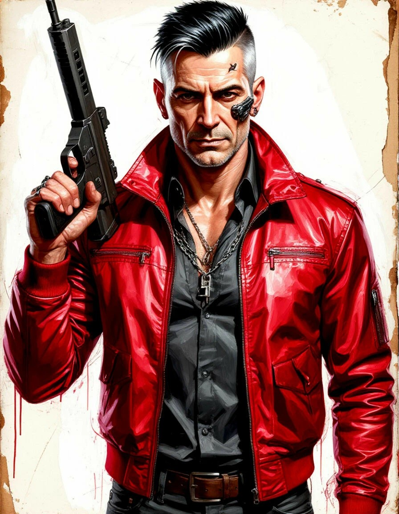
2020
Показать содержимое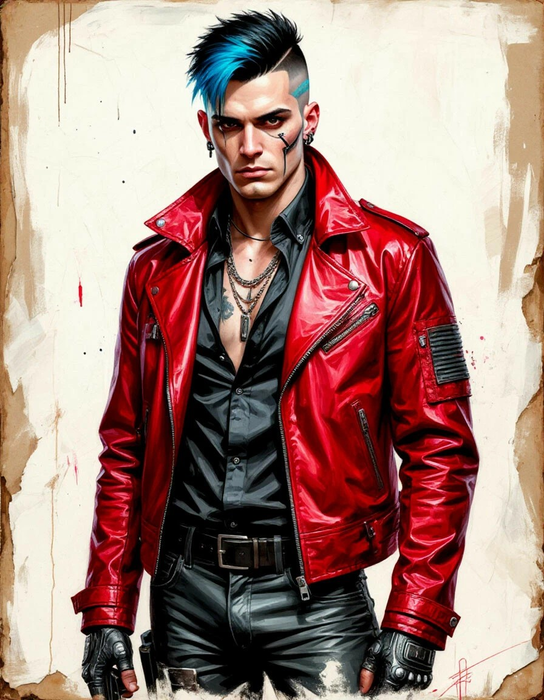
Характер
Идейный, декадансный. Ему кажется, что если мир не изменится в перспективе его жизни, до 22 века всему трындец. Поэтому всякий раз сталкиваясь с невозможностью реализовывать свои идеи, начинает истерить и драматизировать.История
Родился в семье диссидентов, до 5 лет прожил в Союзе, о детстве почти ничего не помнит. Отец, талантливый оружейник, нашедший перспективное место в Милитехе. Когда Эрвину исполнилось пять, Милитех провёл операцию по извлечению семейства в Найт-сити. Мать погибла от рук КГБ, когда Эрвину исполнилось 12 лет. В 14 едва не вылетел из элитной школы, когда на почве ссоры выкинул из окна одного из учеников. В 17 поступил в корпоративный университет на специальность экономиста, но после первого курса забил на занятия и сколотил рок-группу.Показать содержимое

Играли невнятный андеграунд без каких либо радикальных идей. В 20, во время деловой поездки с отцом в бразилию (2017), познакомился в подвальном клубе с представителем местной анархической партизанской ячейкой. В 23 впервые слил им данные о поставках оружия (2020). Операция по захвату груза провалилась, партизан истребили, а Эрвин сделал вывод, что такой протест бессмысленен. Так набрёл на коммунистические идеи и решил направить семейные средства на раскрутку лево направленного музыкального лейбла. В глазах общественности так и остался корпоратом, срубающим бабки на популизме. Однако нередко концерты его групп служили прикрытием для нелегальных операций и договорников. Когда отец углубился в дела сына, финансирование мгновенно прекратилось, лейбл приобрёл подпольный, нишевый статус. С парой ребят из студенческой группы и приобретёнными на лейбле знакомыми, собрал новый коллектив, играющий экспериментальный гранжевый нойз, тексты песен собирая из глав "Капитала".
Показать содержимое
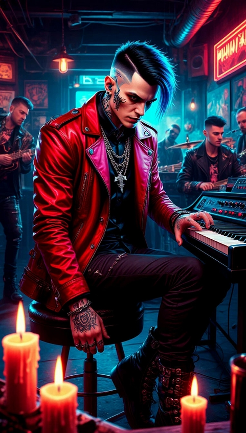
Группа не обрела никакой популярности, поэтому музыка выступала для парня разве что отдушиной в мрачной капиталистической действительности.
С командой познакомился в разное время, с одним, во время передачи данных об оружие партизанам, нужен был надёжный человек. Несмотря на неудачу, никакой вины посредника в этом не было. 2019 в Верхней Марине во время концерта его студенческой группы "Dance in the Grave", во дворе старого морга, завязалась потасовка с местной бандой, на которую позже завалились корпоративные войска. Укрывшись в морге, участники потасовки обнаружили там фабрику по извлечению имплантов и доки о работах над киберпсихозом, в том числе его провоцировании у живых и не согласных на то людей. За несколько дней боёв, в мрачных стенах морга, Эрвин обрёл настоящих товарищей по оружию. Спасение пришло со стороны Триад, морг к тому моменту походил на руины.
Показать содержимое

После прекращения финансирования лейбла и конфликтом интересов, контакты с отцом стали крайне редки, последний раз Эрвин посещал его в пансионате ТравмаТим. Там разговор снова зашёл о мировоззрении сына(2039), завязалась ссора. На данный момент, Эрвин не встречался с отцом уже около пяти лет.
Есть сын, в отличие от Эрвина, корпоративная этика и жизнь проспонсированная дедом того вполне устраивает, из-за чего внук Давыдова старшего и стал первоочередным наследником состояния деда. С отцом же, понятное дело, отношения не заладились.
Дополнение к общей истории:
Отец: Глеб Иванович Давыдов, 79 лет, экс глава разработки табельного вооружения Militech, член научного совета. Проходит лечение в связи со злокачественной опухолью ЖКТ в пансионате Trauma Team.
Сын: Дейв Давыдов, 21 год, менеджер договорного отдела Militech. В отношениях с ведущей бьюти блога на Network 54. Проживает в корпоративном здании на Северной Калифорнийской военной базе.
Эльза Павелко: Мать Дейва, официантка в баре Dilirium на западе Night City. 42 года, жената. Муж, сержант Militech.
Елена Альмонто: 75 лет, бывший соло, член Бразильского партизанского отряда, одна из немногих выживших. На данный момент, состоит в немногочисленной группе кочевников, косвено связанных с Альдекальдо. Проживает в округе Night City.
Бывшый состав Dance in the Grave.
Гитара и вокал. Чак Уолисс, 51 год, закончил экономический, работает в Petrochem менеджером среднего звена. Женат, двое детей.
Барабаны: Лиза Ворд, 47 лет, оператор в NCPD, потеряла обе ноги и руку во время событий в морге. Несмотря на обиду и отказ общения с Эрвином, тот никогда не упускал её из виду и, в меру сил, старался решать те или иные проблемы девушки. Не замужем
Бас гитара: Ариф Радне Ша, однокурсник Эрвина. Погиб во время взрыва Арасака Тауэр.
Состав действуещего музыкального коллектива New Civilizational Path Down (NCPD).
Гитара и вокал: Чак Уолисс.
Бас гитара: Нестор Чернов, 26 лет. Юный роккербой, есть сольный проект, играет на улицах, перебивается чем может, проживает в Маленьком Китае, в контейнерном парке. Не женат.
Навыки
Харизматичное давление 4
Показать содержимое
Места для выступления: известные клубы
Воздействие на фаната (СЛ 8): убедить фаната оказать услугу, переспать с ним, замолвить словечко
На группу до 6 человек (СЛ 10): убедить совместно провести время, купить выпивку и товары для вечеринки
На толпу фанатов (СЛ 12): продать всем окрестным фанатам новые записи. Воротила 2 Показать содержимое
Связи: местный бос, главарь банды, лидер местного квартала
Можно достать: недоступные предметы низкого и обычного качества
Торг: скидка 10% на покупку и продажу в случае успеха
Свой чел: местные культурные особенности Характеристики Показать содержимое
ИНТ (INT) 6 6
РЕА (REF) 8 8
ЛВК (DEX) 4 4
ТЕХ (TECH) 8 8
ХАР (COOL) 8 8
ВОЛЯ (WILL) 5 5
УДЧ (LUCK) 8 6
СКО (MOVE) 4 4
ТЕЛ (BODY) 5 5
ЭМП (EMP) 6 4 Состояние Показать содержимое
HP 35 35
Ранение (-2 на все) 18
Спас от Смерти 5
Человечность [Max Cur] 54 41
Инициатива = 1d10+ 8 8
Репутация
Критические повреждения Body
Критические повреждения Head
Яд/наркотик
Зависимости
ОУ 10 Навыки Показать содержимое
Места для выступления: известные клубы
Воздействие на фаната (СЛ 8): убедить фаната оказать услугу, переспать с ним, замолвить словечко
На группу до 6 человек (СЛ 10): убедить совместно провести время, купить выпивку и товары для вечеринки
На толпу фанатов (СЛ 12): продать всем окрестным фанатам новые записи. Воротила 2 Показать содержимое
Связи: местный бос, главарь банды, лидер местного квартала
Можно достать: недоступные предметы низкого и обычного качества
Торг: скидка 10% на покупку и продажу в случае успеха
Свой чел: местные культурные особенности Характеристики Показать содержимое
ИНТ (INT) 6 6
РЕА (REF) 8 8
ЛВК (DEX) 4 4
ТЕХ (TECH) 8 8
ХАР (COOL) 8 8
ВОЛЯ (WILL) 5 5
УДЧ (LUCK) 8 6
СКО (MOVE) 4 4
ТЕЛ (BODY) 5 5
ЭМП (EMP) 6 4 Состояние Показать содержимое
HP 35 35
Ранение (-2 на все) 18
Спас от Смерти 5
Человечность [Max Cur] 54 41
Инициатива = 1d10+ 8 8
Репутация
Критические повреждения Body
Критические повреждения Head
Яд/наркотик
Зависимости
ОУ 10 Навыки Показать содержимое
Интеллект
Показать содержимое
Показать содержимое
Показать содержимое
Показать содержимое
Показать содержимое
Показать содержимое
Показать содержимое
Киберимпланты
Показать содержимоеПоказать содержимое
Азартные игры 6
Бизнес 4 10
Бухгалтерия 4 10
Бюрократия 6
Внимательность (2+) 2 8
Выслеживание 6
Выживание в пустыне 6
Дедукция 6
Знание местности (Дом) (2+) 4 10 Многофункциональная квартира в Маленьком Китае
Композиция 5 11
Криминология 6
Криптография 6
Наука 6
Образование (2+) 4 10
Обращение с животными 6
Поиск информации 2 8
Скрытие/раскрытие объекта 6
Тактика 6
Чтение по губам 6
Язык (+слэнг) (2+) 4 10 (английский 4, уличный 4, русский 2)
РеакцияБизнес 4 10
Бухгалтерия 4 10
Бюрократия 6
Внимательность (2+) 2 8
Выслеживание 6
Выживание в пустыне 6
Дедукция 6
Знание местности (Дом) (2+) 4 10 Многофункциональная квартира в Маленьком Китае
Композиция 5 11
Криминология 6
Криптография 6
Наука 6
Образование (2+) 4 10
Обращение с животными 6
Поиск информации 2 8
Скрытие/раскрытие объекта 6
Тактика 6
Чтение по губам 6
Язык (+слэнг) (2+) 4 10 (английский 4, уличный 4, русский 2)
Показать содержимое
Автоматический огонь (х2) 8
Верховая езда 8
Вождение 8
Оружие кр. калибра (х2) 8
Пилотирование (х2) 8
Пистолеты 6 14
Стрельба из лука 8
Судоходство 8
Тактическое оружие 8
Тактическое оружие 6
ЛовкостьВерховая езда 8
Вождение 8
Оружие кр. калибра (х2) 8
Пилотирование (х2) 8
Пистолеты 6 14
Стрельба из лука 8
Судоходство 8
Тактическое оружие 8
Тактическое оружие 6
Показать содержимое
Акробатика 4
Атлетика (2+) 4 8
Боевые искусства (х2) 4
Оружие ближнего боя 4
Рукопашный бой (2+) 2 6
Скрытность (2+) 2 6
Танец 4
Уклонение (2+) 7 11
ТехникаАтлетика (2+) 4 8
Боевые искусства (х2) 4
Оружие ближнего боя 4
Рукопашный бой (2+) 2 6
Скрытность (2+) 2 6
Танец 4
Уклонение (2+) 7 11
Показать содержимое
Авиационные технологии 8
Автомеханика 8
Взлом замков 8
Знание техники 8
Игра на инструментах 6 14
Карманник 8
Кибертехника 8
Кино- и фототехника 8
Морские технологии 8
Оружейник 8
Парамедик (х2) 8
Первая помощь (2+) 2 10
Подрывник (х2) 8
Фальсификация 6 14
Художественное ремесло 8
Эл-ника/Безопасность (х2) 8
Мед. технологии - Крио 8
Мед. технологии - Фарма 8
Хирургия (/2) 8
Полевая экспертиза 8
Мастер модернизации 8
Мастер изготовления 8
Мастер изобретатель 8
ХаризмаАвтомеханика 8
Взлом замков 8
Знание техники 8
Игра на инструментах 6 14
Карманник 8
Кибертехника 8
Кино- и фототехника 8
Морские технологии 8
Оружейник 8
Парамедик (х2) 8
Первая помощь (2+) 2 10
Подрывник (х2) 8
Фальсификация 6 14
Художественное ремесло 8
Эл-ника/Безопасность (х2) 8
Мед. технологии - Крио 8
Мед. технологии - Фарма 8
Хирургия (/2) 8
Полевая экспертиза 8
Мастер модернизации 8
Мастер изготовления 8
Мастер изобретатель 8
Показать содержимое
Актерское мастерство 8
Гардероб и стиль 8
Допрос 8
Знаток Улиц 8
Подкуп 8
Торговля 11(+3)
Убеждение (2+) 6 14
Уход за собой 8
ВоляГардероб и стиль 8
Допрос 8
Знаток Улиц 8
Подкуп 8
Торговля 11(+3)
Убеждение (2+) 6 14
Уход за собой 8
Показать содержимое
Концентрация (2+) 5 10
Выносливость 5
Сопротивляемость 5 10
ЭмпатияВыносливость 5
Сопротивляемость 5 10
Показать содержимое
Общение (2+) 6 10
Проницательность (2+) 2 6
Проницательность (2+) 2 6
Киберимпланты -h/emp €$
Разъём для щепок 7 500
Нейролинк 7 500
Смартлинк 3 100
Сайкаст Плетеная Кожа 1000
Биомонитор 100
Щепка навыка "Торговля" 6 500
Разъём для щепок 7 500
Нейролинк 7 500
Смартлинк 3 100
Сайкаст Плетеная Кожа 1000
Биомонитор 100
Щепка навыка "Торговля" 6 500
Инвентарь
HP 35/35
Боеприпасы 20/100 (130/130)
Удача 8/8
Человечность 52/41
КЭШ 1440
Критические повреждения Body —
Критические повреждения Head —
Яд/наркотик —
Зависимости —
Броня Показать содержимое
Боеприпасы 20/100 (130/130)
Удача 8/8
Человечность 52/41
КЭШ 1440
Критические повреждения Body —
Критические повреждения Head —
Яд/наркотик —
Зависимости —
Броня Показать содержимое
Защита B/H €$
Лёгкий бронекостюм 11 100
Оружие
Показать содержимоеЛёгкий бронекостюм 11 100
Оружие (ROF) DMG €$
Пистолет-пулемёт "Stechkin APS" (Модифицированный Стечкин подаренный на 21 летие отцом, с встроенным смарт интерфейсом (отец никогда не верил в боевые навыки сына). 2d6 100
МодФайр 10X 3d6 2d6 5d6 5000
+Smartgun Link 500
Амуниция
Показать содержимоеПистолет-пулемёт "Stechkin APS" (Модифицированный Стечкин подаренный на 21 летие отцом, с встроенным смарт интерфейсом (отец никогда не верил в боевые навыки сына). 2d6 100
МодФайр 10X 3d6 2d6 5d6 5000
+Smartgun Link 500
Амуниция ## €$
Основные боеприпасы 13 120
Снаряжение
Показать содержимоеОсновные боеприпасы 13 120
Стаф €$
Синтезатор "Поливокс" 500
Агент 100
Диктофон 100
Щепка 2 20
Корпоративная страховка 1000
Рация 100еВ
Сумка 20еВ
Бинокль 50еВ
Противогаз 20 еВ
Фонарик 20 еВ
Верёвка 20еВ
Набор личной гигиены 20еВ
Сигнальная ракета 10 еВ
Светящаяся краска 20 еВ.
Одежда
Показать содержимоеСинтезатор "Поливокс" 500
Агент 100
Диктофон 100
Щепка 2 20
Корпоративная страховка 1000
Рация 100еВ
Сумка 20еВ
Бинокль 50еВ
Противогаз 20 еВ
Фонарик 20 еВ
Верёвка 20еВ
Набор личной гигиены 20еВ
Сигнальная ракета 10 еВ
Светящаяся краска 20 еВ.
Одежда €$
Пиджак от кутюр 500
Рокерские брюки 100
Кожанные ботинки с металлическим носком 20
Чёрная корпоративная рубашка 50
Серебрянная цепочка с замком "Серп и Молот" 100
Пиджак от кутюр 500
Рокерские брюки 100
Кожанные ботинки с металлическим носком 20
Чёрная корпоративная рубашка 50
Серебрянная цепочка с замком "Серп и Молот" 100
Хави `Ретро` Джонсон
Внешность
Старомодный жилистый старик, который даже в темном помещении не снимает очки, носит окладистую бороду и бандану, демонстрирующую принадлежность к банде Стальных Псов, каждому кто хоть немного шарит за кланы кочевниковХарактер
Взрывной в любых непонятных терках, Хави может впадать в приступы ностальгии за стаканом вискаря или бутылкой пива, а однажды на спор выпил пинту чух-2 и не ослеп в отличие от их двух придурков, что решили повторить за ним. Лучший способ зацепиться языками с Ретро – обсудить достоинства транспорта, а если вы ещё шарите за Харлеи и Чопперы Ретро скажет, что вы отличный парень и вполне может вписаться за вас, если какой-нибудь бычара в баре решит на вас наехать.История
Юность. Лос-Анжелес (1985-2003). Военная служба (2003-2010)Показать содержимое
Выросший в неблагополучном районе Лос-Анжелеса, с младых ногтей Ретро, а тогда ещё Хави Джонсон отличался дерзким нравом и пылкой любовью к технике. Кривая дорожка привела его к выбору – или тюрьма или служба на Центральной Америке (2003, Харви – 18 лет). И хотя все ожидали, что Хави пошлет это предложение куда подальше, он выбрал армию и побывал во всех горячих точках, где можно было побывать. Там до Хави начало доходить, что американское правительство использует их шальных молодых парней для достижения своих лживых целей, при этом не делает ничего, чтобы осадить корпорации, попирающие все мыслимые и немыслимые законы. После второй корпоративной войны Харви уходит в отставку, повздорив с начальством (2010, Хави – 25). Зрелость. В рядах кочевников (2010-2015)
Показать содержимое
На гражданке Хави, ставший убежденным анархистом, влился в ряды байкеров, быстро став их заводилой. "Стальные псы" опекали бедные районы Лос Анджелеса, защищая их от прочих банд. В Найт-сити Хави перебрался после раскола банды, когда ее лидер – Эдди Гонсалес по прозвищу "Гонзо" не объявил о том, что настали новые времена, требующие смены курса и начал грабить и крышевать магазины на районе (2015, Хави – 30). Заслуги и доброе имя Хави привели к тому, что его приняли в Альдекальдос, причем решению данного вопроса способствовал лидер нации – Хуан Альдекальдо. Хуан стал другом и учителем Хави, а его смерть тяжело ударила по Хави – опасаясь конкуренции со стороны любимчика, Хави отодвинули со всех занимаемых позиций. Получив определенный карт-бланш, Хави начал вести дела самостоятельно. Свободное плавание до образования банды (2015-2019)
Показать содержимое
Отстраненный от дел семьи, но сохранивший привилегии в виде доступа к гаражу и контактам, Хави стал вести жизнь наемника, не связанного обязательствами, но всегда вступался за своих на серьезных заварухах. Сейчас Хави вряд ли вспомнит, какого черта он забыл на том концерте в морге (2019 год, Хави – 34), который стал для него судьбоносным – вступившись за парней, которых начали прессовать мафиози, он познакомился с теми, кто впоследствии стал его друзьями и товарищами на всю последующую жизнь. Счастливые годы. Возвращение в ряды кочевников (2019-2035)
Показать содержимое
Последующие годы Хави прошли в новообретенной банде. С ней он встретил и новость о взрыве в башне Арасака, после чего город погрузился в пучину хаоса. В 2023 году кочевники попросили Хави вернуться и он занялся восстановлением дорог, участвуя в перестрелках с мародерами и бадитами, что сражались за контроль путей, ресурсных баз и складов вокруг Найт Сити. Лишь после того, когда ситуация улучшилась (2035 год, 50 лет), Хави ушел на покой.
Покой (2035-2045)
Показать содержимое
Устав от бесконечных перестрелок, Хави совместно с подругой Аной (восточноевропейское мягкое я решительно не давалось Хави) Колусевски решил открыть магазин чопперов "Ретро". Однако истинной деятельностью его стала продажа и модификация оружия, хотя Хави честно выкраивал время, чтобы на витрине магазина действительно стояли блестящие хромом байки, но львиную долю выручки магазина приносило оружие. Богатым Хави это не сделало, но расходы на приличествующую его возрасту жизнь, аренду и попойки с корешами ему хватало – а что еще нужно пожилому кочевнику.
Навыки
HP: 50 • [-2 на все]=25 • [Спас от Смерти] 8Человечность: • Max=50 • Cur=37+4=41
Инициатива: 1d10+8
ОУ = 160 (старт) - 140 (уклонение 6–>7) + 90 (драка в Красном Октябре) = 110 + 140 = 250 - 240 (ранг Мото 3 –>4) = 10 + 90 + 80 = 180 (приключение в лабе "Дубль": бой и расследование) = 180 + 120 (непонятная возня в лабе и утомительные дебаты) =300+130 (6 и 7 сессия)=430Кочевник 4 / Техник 3 Ролевая способность: Мото 4
Показать содержимое
⚙️ Кочевник добавляет свой Ранг Мото к любой проверке навыков вождения и пилотирования наземного, воздушного или морского транспорта, которую он делает.
⚙️ Всякий раз, когда кочевник повышает свой Ранг Мото, он выбирает: ИЛИ добавить стандартный транспорт (с мин. характеристиками) своего Ранга Мото или ниже в доступный пул разрешённого транспорта; ИЛИ улучшить один из уже разрешенных семейных транспортных средств кочевника с помощью одного улучшения своего Ранга Мото или ниже. Ролевая способность: Создатель 3
Показать содержимое
⚙️ Каждый раз, когда Техник повышает свой ранг "Создатель", он получает 1 ранг в двух разных специализациях. Выбранные специализации: Полевая экспертиза – 3, Мастер модернизации – 2, Мастер изобретатель – 1.
⚙️ Каждый уровень специализации "Полевая экспертиза" дает +1 к навыкам: Техника, Кибертехника, Системы безопасности, Оружейник, Наземная, морская или Авиатехника
⚙️ Каждый уровень навыка позволяет вместо полноценного ремонта просто "подлатать" предмет на 10 минут за каждый ранг до идеального состояния. Сложность определяется так же, как и полноценный ремонт, но позволяет сделать это быстро. К этой проверке ты добавляешь ранг "Полевая экспертиза". После того, как время пройдет - предмет вернется в исходное состояние. Подлатать его больше нельзя, пока не произойдет полноценный ремонт.
⚙️ Техник специализации "Мастер модификаций" может улучшить снаряжение 1 из следующих способов . Предмет может получить только одно улучшение, даваемое этой специальностью.
– Уменьшить потерю человечности киберимпланта (кроме борг) на 1d6 если его потеря человечности 2d6 или больше
– Добавить в предмет один слот того же типа (для Опций, Модификаций, Программ/Оборудования и т.д.).
– Упростить конструкцию предмета, что позволит в будущем сократить время необходимое для полного ремонта в два раза.
– Сделать скрываемым не скрываемое одноручное оружие.
– Повысить качество оружия со Стандартного до Отличного.
– Добавить Экзотическому Оружию слот для Модификаций..
– Дать возможность Экзотическому Оружию стрелять одним из не основных типов боеприпасов.
– Добавить 1 ОС, предмету у которого изначально есть ОС.
– Модернизировать транспорт Улучшением, которое требует Ролевую Способность Кочевника первого Ранга.
– Установить модернизацию, придуманную Техником при помощи "Мастер Изобретатель". Необходимы дополнительные материалы, той же ценовой категории, какую ГМ присвоил предмету при его изобретении.
⚙️ Мастер изобретатель – придумайте модернизацию для существующего предмета или изобретите новый предмет
Характеристики [Cur/Max]Скрыть содержимое
ИНТ (INT) – 5/5
РЕА (REF) – 8/8
ЛВК (DEX) – 5/5
ТЕХ (TECH) – 6/6
ХАР (COOL) – 4/4
ВОЛЯ (WILL) – 8/8
УДЧ (LUCK) – 6/6
СКО (MOVE) – 6/6
ТЕЛ (BODY) – 8/8
ЭМП (EMP) – 6/6 НавыкиИНТ навыки
Азартные игры – 0+5=5
Бизнес – 0+5=5
Бухгалтерия – 0+5=5
Бюрократия – 0+5=5
Внимательность (2+) - 5+5=10
Выслеживание – 5+5 = 10
Выживание в пустыне - 0+5=5
Дедукция – 0+5=5
Знание местности (Дом) (2+) – 2+5=7
Композиция – 0+5=5
Криминология – 0+5=5
Криптография – 0+5=5
Наука – 0+5=5
Образование (2+) – 2+5=7
Обращение с животными – 0+5=5
Поиск информации – 0+5=5
Скрытие/раскрытие объекта – 0+5=5
Тактика – 0+5=5
Чтение по губам – 5+5=10
Язык (+слэнг) (2+) – 4+5=9
РЕА навыки
Автоматический огонь (х2) – 0+8=8
Верховая езда – 0+8=8
Вождение – 6+8+4 (ранг мото) =18
Оружие кр. калибра (х2) – 0+8=8
Пилотирование (х2) – 0+8+4 (ранг мото) =12
Пистолеты – 6+8=14
Стрельба из лука – 0+8=8
Судоходство – 0+8+4 (ранг мото) =12
Тактическое оружие – 6+8=14
ЛОВ навыки
Акробатика – 0+5=5
Атлетика (2+) – 2+5=7
Боевые искусства (х2) – 0+5=5
Оружие ближнего боя – 0+5=5
Рукопашный бой (2+) – 7+5=12
Скрытность (2+) – 2+5=7
Танец – 0+5=5
Уклонение (2+) – 7+5=12
ТЕХ навыки
Авиационные технологии – 0+6+4 (ранг мото)+3 (полевая экспертиза)=13
Автомеханика – 2+6+4 (ранг мото)+3 (полевая экспертиза) =15
Взлом замков – 0+6+3 (полевая экспертиза)=9
Знание техники – 2+6+3 (полевая экспертиза)=11
Игра на инструментах – 0+6=6
Карманник – 0+6=6
Кибертехника – 4+6+3 (полевая экспертиза)=13
Кино- и фототехника – 0+6=6
Морские технологии– 0+6+4 (ранг мото)+3 (полевая экспертиза)=13
Оружейник – 4+6+3 (полевая экспертиза)=13
Парамедик (х2) – 0+6=6
Первая помощь (2+) – 2+6=8
Подрывник (х2) – 0+6=6
Фальсификация – 0+6=6
Художественное ремесло – 0+6=6
Эл-ника/Безопасность (х2) – 0+6=6
ХАР навыки
Актерское мастерство – 0+4=4
Гардероб и стиль – 0+4=4
Допрос – 0+4=4
Знаток Улиц – 0+4=4
Подкуп – 0+4=4
Торговля – 0+4=4
Убеждение (2+) – 2+4=6
Уход за собой – 0+4=4
ВОЛЯ навыки
Концентрация (2+) – 4+8=12
Выносливость – 4+8=12
Сопротивляемость– 0+8=8
ОБЩ навыки
Общение (2+) – 2+3=5
Проницательность (2+) – 2+3=5
Инвентарь
HP 50/50Боеприпасы
тяжелый пистолет 8/8 (24 в запасе)
штурмовая винтовка 25/25 (55 в запасе, +2 магазина)
Удача 6/6
Человечность 37/50
Критические повреждения Body —
Критические повреждения Head —
Яд/наркотик —
Зависимости — ОружиеТяжелый Пистолет (+13) ___ 3d6 ___ 100€$
Штурмовая винтовка "Франкенштейн" (высокого качества, недоступна) ___ 3d6 ___ 500€$
Суперхром® Гламурная винтовка | ЧХ: 120 | Центурион Ессеншалс | 1,000€$->5,000€$
Экзотическая штурмовая винтовка высокого качества. Может стрелять не стандартными боеприпасами. При открытом ношении пользователь получает +2 к проверкам навыка Гардероб и стиль. Этот бонус действует только один раз и не сочетается с другим оружием, дающим бонус к гардеробу и стилю.
Показать содержимое
Легендарное оружие, успешно пережившее многочисленные эксперменты и модификации Ретро Защита Roller Derby Padding (тело) – ___ 7 ___ 50€$
Показать содержимое
форма роллер-дерби, по статам как кевлар, доп. Chasing the Rabbit Кевлар (голова, бандана) ___ 7 ___ 50€$ Киберимпланты– Киберрука (4 слота, левая) – 7 ПЧ / 500 €$
– Большие костяшки (1 слот, оружие бл. боя, 2d6, 2 СКА) – 3 ПЧ / 100 €$
– Рукохват (1 слот, захват объекта, 30 м, 10 ПЗ) – 3 ПЧ / 100 €$
– Техсканер (2 слота, +2 к проверкам навыков Техники, Кибертехники, Автомобильные технологии, Морские технологии, Авиационные технологии, Электроника/Безопасность, Оружейник – 7 ПЧ / 500 €$
– Мультитул (мясная рука, правая) – 3 ПЧ / 100 €$ Снаряга– Агент. Смартфон с обучающимся ИИ, который учится, как лучше всего соответствовать потребностям своего владельца. +2 к Навыку Поиск Информации. Стоимость - 100 €$
– Умные очки. Содержат два Слота для модулей Киберглаз. При ношении очки дают доступ к преимуществам этих модулей. Свободные слоты - 1/2. Стоимость - 500 €$
– Модуль "Телеоптика" (установлено в очки) – позволяет видеть детали на расстоянии до 800 м. При атаке цели на расстоянии 51+ м, можете добавить +1 к проверке. Не суммируется со снайперским прицелом. Стоимость - 500 €$
–
–
– 2 блока С8 – 200 €$
Показать содержимое
Блок пластиковой взрывчатки, который можно прикрепить к любой твердой поверхности. Для активации взрывчатки требуется действие, чтобы провести проверку на подрыв против DV15. Если вам это удалось, умножьте 2 на количество, на которое вы превзошли DV, до максимума N, где N — это 3 + количество использованных единиц C-8. Затем бросьте столько же d6 в качестве урона. Урон рассчитывается по правилам взрывов и удаляет SP, равное количеству использованных единиц C-8. C-8 можно взорвать с помощью таймера или удаленно, через связанного агента. Установка таймера или удаленная детонация требуют другого действия, но не проверки. Пользователь может попытаться спрятать взрывчатку во время ее установки, используя Действие для Проверки Скрытия Объекта. Обезвреживание заряженной C-8 требует прохождения Проверки Подрыва, сделанной для активации взрывчатки. Лица с REF 8 или выше, которые могут видеть взрывчатку, могут попытаться уклониться от ее взрыва с помощью Проверки Уклонения против Проверки Подрыва, сделанной для активации взрывчатки. Взрывы C-8 могут нанести критические травмы. – противогаз – 20
– фонарик – 20
– детектор радиации – 100
Шмот – Штаны Nomad Leathers
– Обувь Nomad Leathers
– Верхняя одежда Nomad Leathers
– Куртка Nomad Leathers Деньги – 160 едди Планы– Наведать Рета
ТРАНСПОРТ
– Автомобиль (семейный), НР - 50+20, мест 4+2, СКО - 20. Улучшения: усиленное шасси (+20 НР), пуленепробиваемое стекло (тонкое 15 НР), дополнительные места (+2)
– Тансон Посыльный | ЧХ: 60 | Тансон Груп | 16,000€$
Гирокоптер с одним сиденьем, который может переходить в удобный для переноски режим и обратно с помощью действия. Он несовместим с Улучшенными Сиденьями.
Показать содержимое
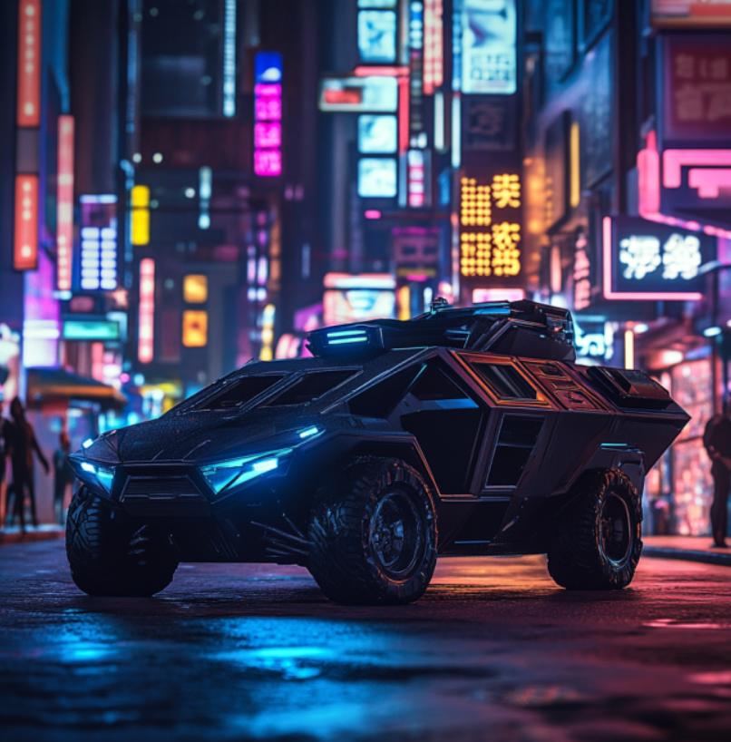
Ральф `Датч` ван Бюрен
Внешность
Неулыбчивый чернокожий мужчина 58 лет с длинными седыми волосами, которые часто затянуты в хвост, в угоду дано забытой моде. Чаще всего носит неброскую одежду, а точнее - серо-зеленую униформу своего подразделения, ибо на гражданскую одежду тратить эдди не считает особо нужным если "государство обеспечивает". И тем не менее, не забывает выходя выключить свет и надеть умные очки с AV, не раз спасавшие его шкуру как на серых улицах города, так и в кабине его любимой "вертушки".полувоенной модели вертолета, выпускавшейся как для корпуса морской пехоты, так и для полицейских спецов. Странным образом хай-тек очки сочетаются со старомодными наручными часами, которые Датч носит как напоминание о своей мясной идентичности.Показать содержимое
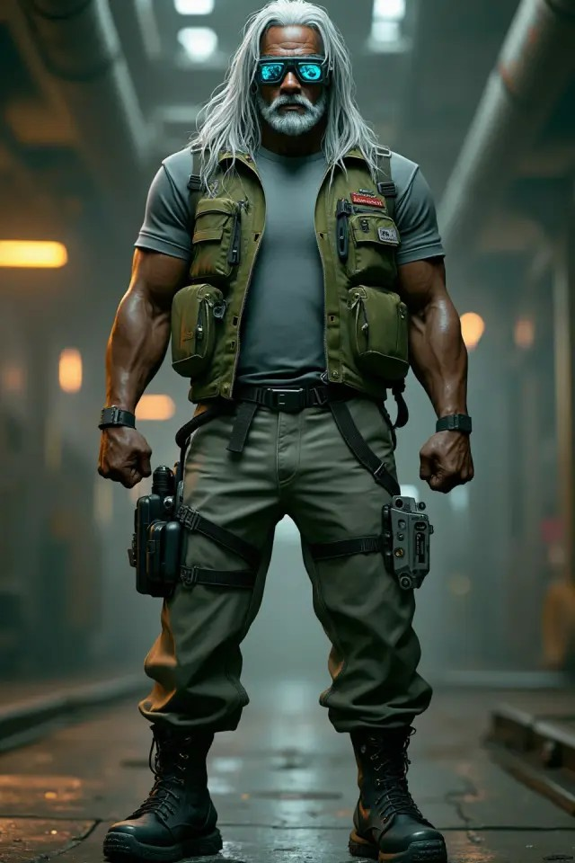
Характер
"Характер спокойный нордический" - точно не про ван Бюрена-младшего как почему-то все звали этого желчного негра, ибо спокойствием там пахло обычно только перед бурей, тем более что в целом Ральф не то чтобы не любит людей, он просто не любит когда они в пределах видимости, да еще и не через прицел. Технически это не меняет склочного и скорее злого отношения к окружающим, но для самого мужчины это по какой-то причине важно, о чем он не забывает напоминать окружающим.История
Ральф так до сих пор и не знает, кто именно из его прабабушек по отцовской линии спутался с голландцем и получил столь необычную фамилию, за которой уже подтянулось и прозвище. Обычно люди с приставками "ван" и тем более "ван дер" белокожие, высокие и синеглазые блондины, тем больше нравилось молодому темнокожему парню щеголять этим несоответствием. Бунтарский характер помимо кожаной одежды и мотоцикла подталкивал и к выпендрежу столь необычным сочетанием. Правда, ровно до того, как юный Ральф повелся на отечественную пропаганду и записался добровольцем в десантно-штурмовые подразделения, "очищавшие страны Латинской Америки от наркокартелей и защищавшие таким образом родные Штаты Америки". Суровый сержант сразу же обеспечил новобранца кличкой "Белоснежка", которая за ним и закрепилась до самого окончания учебки, после которой хотелось порвать инструктора голыми руками, мешало только наличие тяжелого "Глока" не в тех руках и скорость, с которой бывалый вояка его доставал. Вот только когда ван Бюрен вернулся из сырых болотистых лесов Бразилии, он почему-то оплатил тому же самому инструктору курс лечения в одной из дорогих клиник, после которой тот перестал даже орать по ночам, вспоминая свои молодые годы и в речи его появились цензурные слова помимо предлогов, что уже позволило найти хоть какую-то работу на гражданке по уходу из армии.Ральф тогда не знал, что его самого ждала почти та же участь. Во время службы бравый рейнджер постепенно прошел курсы пилотов и переквалифицировался, проведя несколько одинаково успешных операций по спасению сових и поливанию свинцом чужих. Так "Белоснежка" стала сначала "Летучим Голландцем", которое потом и сократилось до короткого "Датч".
После войны парень долгое время не мог найти себя, отчего ударился во всякий андеграунд, алкоголь и полуподпольные концерты полуподпольных групп. На одном из таких он и попал под раздачу вместе со многими другими участниками мероприятия, оставшись в живых, но с несколькими раздробленными крупным калибром костями, из-за чего ему и пришлось впоследствии ставить импланты, чего делать совсем не хотел. С тех пор неизменными спутниками мужчины стали его часы, прилетевшие с ним из армии. Как попытка не потерять, как он говорит, "настоящего себя, ибо неизвестно на которой замене родной части тела на киберпротез закончится Ральф ван Бюрен и начнется бездушная машина". Особенно часто это слышали чумбы, ставшие после той перестрелки почти родными вечно пьяному ветерану.
Тем не менее, какое-то время спустя мужчина взялся за ум и нашел себя в единственно возможном месте - спецподразделении МАКС-ТАК, так как командир Хаммерман - единственный человек, который смог собственным примером зажечь огонь в глазах и душе, почти потухших от ненависти к правительствам, корпоратам и окружающей действителности, напоминая о тех идеалах неподкупности, чести и долга, ради которых молодой ван Бюрен гнил в проклятых тропиках и которые тем не менее дали его духу достаточно силы чтобы вернуться оттуда живым. Так "Летучий Голландец" снова взмыл в воздух на своей вертушке, доставляя "своих ребят" на задания и прикрывая их стволами тяжелой машины с воздуха или просто из гранатомета когда из этой самой машины все же приходилось вылезать. Так было и в тот злополучный день святого Валентина, который он пропустил по вине каких-то киберублюдков, кошмаривших целый аграрный район, для избавления от которых пришлось вызывать МАКС-ТАК вместо обычной семьи номадов, обычно решавших подобные вопросы.
Навыки
• HP: 60• [-2 на все]=30 (порог тяжелого ранения)
• [Спас от Смерти] 12
• Человечность: 52
• Инициатива: 1d10+8 Законник Подкрепление (6)
Показать содержимое
Законник может призвать на помощь группу
своих коллег по правопорядку, в зависимости от ранга законника и условий, при которых
происходит вызов. Подкрепление будет вооружено и бронировано в соответствии с таблицей ниже, управляет ими ГМ.
По мере повышения ранга законника, он, скорее всего, получит повышение в своей текущей организации или будет завербован правоохранительными органами, из которых он в данный момент может вызвать подкрепление.
В случае опасности вы можете вызвать подкрепление из группы вашего ранга или ниже. В
качестве действия вы делаете бросок на d10, равный или меньший, чем ваш ранг подкрепления, чтобы заставить кого-нибудь откликнуться на ваш призыв. Если вы злоупотребите этим, ваш босс вышвырнет вас из отдела или наложит на вас взыскание по своему усмотрению.
После того, как кто-то откликнется на ваш вызов, вы бросаете d6, чтобы узнать, через сколько раундов на место прибудет подкрепление. Если вы бросите 6, вместо вашего обычного подкрепления прибудет подкрепление уровня +1 от вашего, если только вы не 10 ранга, в этом случае прибудут две отдельные группы подкрепления. Если на ваш вызов никто не откликнулся, вы всегда можете повторить вызов подкрепления в следующем раунде. Характеристики [Cur/Max] Показать содержимое
ИНТ (INT) 6/6
РЕА (REF) 8/8
ЛВК (DEX) 8/8
ТЕХ (TECH) 4/4
ХАР (COOL) 4/4
ВОЛЯ (WILL) 8/8
УДЧ (LUCK) 6/6
СКО (MOVE) 6/6
ТЕЛ (BODY) 4/4 + усиленные мышцы и кости = 6/6 + экзоскелет сигма = 12/12
ЭМП (EMP) 8/8 - 3 за импланты = 5/5 Навыки Показать содержимое
ИНТ навыки
Показать содержимое
Азартные игры 6
Бизнес 6
Бухгалтерия 6
Бюрократия 6
Внимательность (2+) 8
Выслеживание 6
Выживание в пустыне 6
Дедукция 6
Знание местности (Дом) (2+) 8
Композиция 6
Криминология 6
Криптография 6
Наука 6
Образование (2+) 8
Обращение с животными 6
Поиск информации 6
Скрытие/раскрытие объекта 6
Тактика 6
Чтение по губам 6
Язык (+слэнг) (2+) 8
Показать содержимое
Автоматический огонь (х2) 8
Верховая езда 8
Вождение 14
Оружие кр. калибра (х2) 15
Пилотирование (х2) 14
Пистолеты 15
Стрельба из лука 8
Судоходство 8
Тактическое оружие 15
Показать содержимое
Акробатика 8
Атлетика (2+) 10
Боевые искусства (х2) 8
Оружие ближнего боя 8
Рукопашный бой (2+). 14
Скрытность (2+) 11
Танец 8
Уклонение (2+) 15
Показать содержимое
Авиационные технологии 4
Автомеханика 4
Взлом замков 4
Знание техники 4
Игра на инструментах 4
Карманник 4
Кибертехника 4
Кино- и фототехника 4
Морские технологии 4
Оружейник 4
Парамедик (х2) 4
Первая помощь (2+) 6
Подрывник (х2) 10
Фальсификация 4
Художественное ремесло 4
Эл-ника/Безопасность (х2) 4
Мед. технологии - Крио 4
Показать содержимое
Актерское мастерство 4
Гардероб и стиль 4
Допрос 4
Знаток Улиц 4
Подкуп 4
Торговля 4
Убеждение (2+) 6
Уход за собой 4
Показать содержимое
Концентрация (2+) 10
Выносливость 8
Сопротивляемость 8
Показать содержимое
Общение (2+) 7
Проницательность (2+) 7
Инвентарь
HP 51/60Человечность [Max Cur] 52/52
Репутация
Критические повреждения Body
Критические повреждения Head
Яд/наркотик
Зависимости
Киберимпланты
усиленные мышцы и кости 1000
Боргирование
Экзоскелет сигма 1000
Защита
Легкий бронешлем Head 100
Легкий бронекостюм Body 100
Оружие (ROF) DMG €$
ТП Милитех Персей 4d6 5000
Показать содержимое
Милитех Персей | ЧХ: 112 | Милитех
Персей — это экзотический очень тяжелый пистолет отличного качества, который вмещает 11 патронов. Если он стрелял в предыдущем раунде текущего боя, то действует как оружие с 2 СКА вместо 1 СКА Гранатомет Militech "Mini-Grenade" 6d6 500
Амуниция ## €$
Боеприпасы для ТП 50 50
боеприпасы для дробовика 100 100
Гранаты для гранатомета 6 600
Стаф €$
Агент 100
сумка 20
бинокль 50
Фонарик 20
Верёвка 20
Наручники 50
Программы/оборудование
NCPD База Преступлений
Показать содержимое
NCPD База Преступлений | ЧХ: 13 | NCPD | 500€$
Приложение (в агент). Требуется доступ к Городской Сети Найт Сити. Приложению требуется 1 час для получения результатов. Эдди: 100
Andreas `Gonzo` Schreyer
Внешность
55 лет. А вот такие мы были тридцать два года назад, в 2013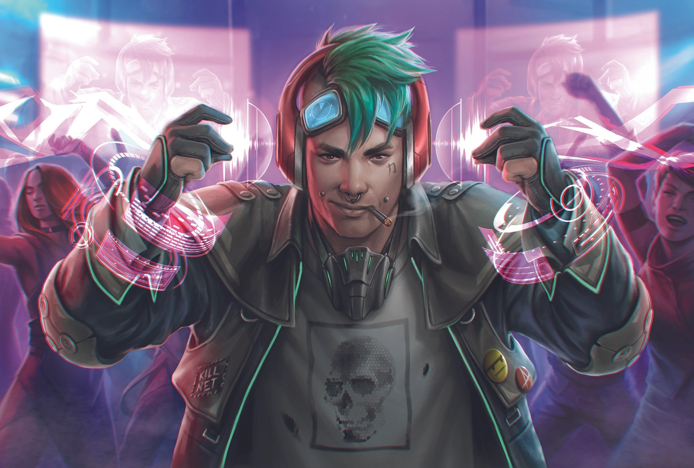
Рост 1 м 78 см. Вес 90 кг, глаза серые, волосы седые, носит бороду.
Плотный, медленный и неповоротливый мужчина отнюдь не атлетической наружности. Одевается комфортно, носит окладистую седую бороду, из украшений - имплементированные под кожу на левой руке часы и медицинский имплант на правой, постоянно нудящий через посредство Агента ему и всем прочим об отклонениях в области давления, температуры, концентрации гармонов - да мало ли чего может отклоняться в организме уже немолодого мужчины, ведущего нездоровый образ жизни. В частности, курящего, в том числе кальян.
Характер
Андреас - идеалист, считающий, что в этом мире слишком много насилия и что мы не делаем его лучше, уничтожая силой зло.В молодости он считал также, но только полагал, что если отметелить всех плохих, то оставшиеся станут хорошими.
За что получил от друзей смешную кличку "Гонзо" - как тот, кто исповедует нелепые идеалы, не имеющие шанса быть достигнутыми в этом мире.
Полагал он также, что единая свободная сеть на всю планету - залог процветания и счастья для всех даром, и чтобы никто не ушёл обиженный.
Обожает музыку группы Scorpions и Dancing in the Grave - считает тех и других небожителями.
История
Папа Андреаса был офицером армии ГДР - командовал всей артиллерийской разведкой, а это вам не хухры-мухры. После 91 года был вынужден уйти из армии и эммигрировать в США, где пошёл работать на кондитерскую фабрику.Братьев и сестёр у маленького Андреаса не было, мама умерла, когда он был совсем ребёнком, и отец для него надолго стал образцом. Долг, порядок, служение идее не за страх, а за совесть, вопреки всему, даже тогда, когда, казалось бы, не остаётся никаких объективных шансов на её сохранение и возрождение.
В Америке парень неплохо учился, особенно в области точных наук и вполне естественным образом поступил в университет на компьютерные технологии.
Увлекался роком, был членом нескольких молодёжных банд, зажигал на концертах, всерьёз веря, что рокнролл способен разрушить этот мир чистогана, но разрушить не просто так, а для того, чтобы сделать лучше.
И когда Сильверхэнд запустил свою безумную затею, Андреас был рядом - не имея голоса, орал песни, скандировал лозунги и с оружием в руках защищал то, что ему было дорого.
Когда стало ясно, что ничего путного из этой затеи не получится, пришлось просто зарабатывать деньги и драться за выживание плечом к плечу рядом с твоими братьями - не теми, кто разделяет твои идеи, а теми, кто без лишних слов прикроет тебя в бою и отдаст тебе последний патрон и кусок хлеба.
Его хорошо знают нетраннеры Короткого Замыкания - в основном, конечно, старого, но до некоторой степени и вновь отстроенного. Сам Брэйн при встрече не сочтёт зазорным поздороваться и спросить про то, не пошли ли у тебя уже, старого пердуна, внуки косяком.
Но расставание с идеями далось Андреасу нелегко. Он по прежнему в глубине души верит, что мир можно спасти, хотя и не знает как, и старается по возможности не делиться этими взглядами.
Сейчас, двадцать лет после того, как банда перестала действовать как единый механизм, Шрайер работает как вольное копьё - специалист по компьютерной безопасности, обеспечивает конструирование и защиту сетевой архитектуры для небольших организаций и собственников средней руки - тех, кто не могут позволить себе специалиста в штате.
Помимо профессионализма, его достоинством считается доказанная делом лояльность к заказчику - ещё никому не удавалось заставить Шрайера слить на сторону детали сетевой архитектуры. По крайней мере, так принято считать.
У него двое детей - старшая дочь учится в колледже на лингвиста, младший сын пошёл в отца, изучает точные науки но пока ещё в школе. С женой они в разводе, но сохранили хорошие отношения - он оплачивает содержание квартиры в гораздо более престижном районе, чем его собственная халупа в EverGreen Apartments. С женой живут оба ребёнка, хотя у старшей уже есть свой бойфренд - на взгляд Андреаса, инфантильный бездельник.
С ним самим живёт его престарелый (92 года) отец - он сохраняет трезвость ума, но вот передвигается уже только на инвалидной коляске.
Навыки
Показать содержимоеHP: 50 • [-2 на все]=25 • [Спас от Смерти] 8
Человечность: • Max=54 • Cur=40 (Бонус 4 к человечности от мастера за предисторию)
Инициатива: 1d10+8
ИнтерфейсИнтерфейс 6
Показать содержимое
Проверка Интерфейс +1D10 на успех действия в сети Характеристики [Cur/Max] Показать содержимое
ИНТ (INT) 8HP 50
РЕА (REF) 8/8
ЛВК (DEX) 2/2
ТЕХ (TECH) 5
ХАР (COOL) 7
ВОЛЯ (WILL) 8
УДЧ (LUCK) 8/6 -1 за убегание от великана.
СКО (MOVE) 2/2
ТЕЛ (BODY) 8/4
ЭМП (EMP) 5/5
Ранение 25
Спас от смерти 8
Человечность 40/54 (бонус 4 за предисторию.
Инициатива 1D10+8
Навыки Показать содержимое
ИНТ навыки skills INT
Азартные игры 8
Бизнес 8
Бухгалтерия 8
Бюрократия 8
Внимательность (2+) 6 14
Выслеживание 8
Выживание в пустыне 8
Дедукция 2 10
Знание местности (Дом) (2+) 2 10
Композиция 8
Криминология 8
Криптография 2 10
Наука 0 8
Образование (2+) 2 10
Обращение с животными 8
Поиск информации 4 12
Скрытие/раскрытие объекта 8
Тактика 8
Чтение по губам 8
Язык (+слэнг) (2+) 4 12
РЕА навыки skills REF
Автоматический огонь (х2) 8
Верховая езда 8
Вождение 8
Оружие кр. калибра (х2) 8
Пилотирование (х2) 8
Пистолеты 8 +6 =14
Стрельба из лука 8
Судоходство 8
Тактическое оружие 8
ЛВК навыки skills DEX
Акробатика 2
Атлетика (2+) 2 4
Боевые искусства (х2) 2
Оружие ближнего боя 2
Рукопашный бой (2+) 2 4
Скрытность (2+) 0 2
Танец 2
Уклонение (2+) 2 4
ТЕХ навыки skills TECH
Авиационные технологии 5
Автомеханика 5
Взлом замков 5
Знание техники 2 7
Игра на инструментах ___
Карманник 5
Кибертехника 2 7
Кино- и фототехника 5
Морские технологии 5
Оружейник 5
Парамедик (х2) 5
Первая помощь (2+) 2 7
Подрывник (х2) 5
Фальсификация 5
Художественное ремесло 5
Эл-ника/Безопасность (х2) 6 11
Мед. технологии - Крио 5
Мед. технологии - Фарма 5
Хирургия (/2) 5
Полевая экспертиза 1 6
Мастер модернизации 1 6
Мастер изготовления 5
Мастер изобретатель 5
ХАР навыки skills COOL
Актерское мастерство 7
Гардероб и стиль 7
Допрос 7
Знаток Улиц 7
Подкуп 7
Торговля 7
Убеждение (2+) 2 9
Уход за собой 7
ВОЛЯ навыки skills WILL
Концентрация (2+) 4 12
Выносливость 8
Сопротивляемость 4 12
ЭМП навыки skills EMP
Общение (2+) 2 7
Проницательность (2+) 2 10
Инвентарь
HP 50/50Удача 6/6
Человечность 44/54
Критические повреждения Body —
Критические повреждения Head —
Яд/наркотик —
Зависимости —
Детектор радиации
Бутылка Бароло урожая 1999 года.
Снаряжение нетраннера
Снаряжение нетраннера
Кибердека очень дорогая, легендарное оружие, 500
Евродолларов, 9 слотов, 3 свободных
Нейролинк
Личный порт
Оборудование деки
Виртуальные очки - 100 Евродолларов;
Закалённая схема - 100 Евродолларов, 1 слот;
Теплоизоляция проводки - 100 Евродолларов, 1 слот
Программы
Быстрый Гонзалес 100 долларов 1 слот
Стиратель - 20 Евродолларов, 1 слот;
Найдёмся - 20 Евродолларов, 1 слот;
Зенитка - 50 Евродолларов, 1 слот;
Банкхаммер - 50 Евродолларов, 1 слот;
Меч - 50 Евродолларов, 1 слот;
Экзотический револьвер Городской охотник 4d6 18 /ОТ пистолет 1 1 1000€$ Премиум
Коннектор для смарт-линка - 500 долларов
Итого: 2 400 долларов Евродолларов потрачено, 8/10 слотов заняты.
Шмот…Полный комплект одежды Leisurewear - 540 Евродолларов, всего вместе со стилевыми имплантами 740 Евродолларов.
Сетевой костюм Лотов
СтильПодкожные Часы - 100 Евродолларов (левое запястье)
Биомонитор- 100 Евродолларов правое запясте.
Деньги: было 100 евродолларов, пришло 2000, потратил 1000 долларов на Великана, 100 долларов на зажигательные патроны, 600 долларов на рации. Ещё купил меч и доспехи. Итого осталось 300 долларов.
Клод `Volk` Бишофф
Внешность
Возраст: 57 летРост: 177 см
Вес: 72 кг
Сухопарый. С бритыми явно не накануне лицом и висками - хотя волосы в слишком хорошем состоянии, чтобы считать доставшимися их исключительно от природы. Стиль, сочетающий в себе какое-то ностальгическое тряпье с логотипом полузабытой группы, кожано-пластиковый верх и вызывающе большую бляху на ремне - выглядит так, словно по заложенной в него изначальной идее должен был настораживать наблюдателя, но с какого-то времени носитель просто на это забил. Единственный ярко-синий киберглаз с одной стороны ничем не выделяется на улицах Найт-Сити, но с другой стороны - из двух глаз искусственный только один.
2045:
Показать содержимое
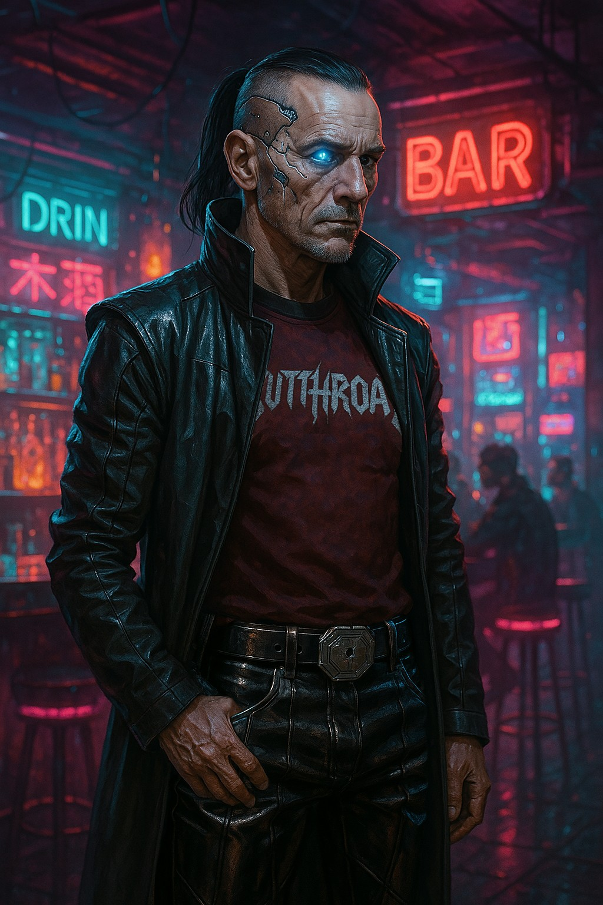
2022:Показать содержимое

Показать содержимое
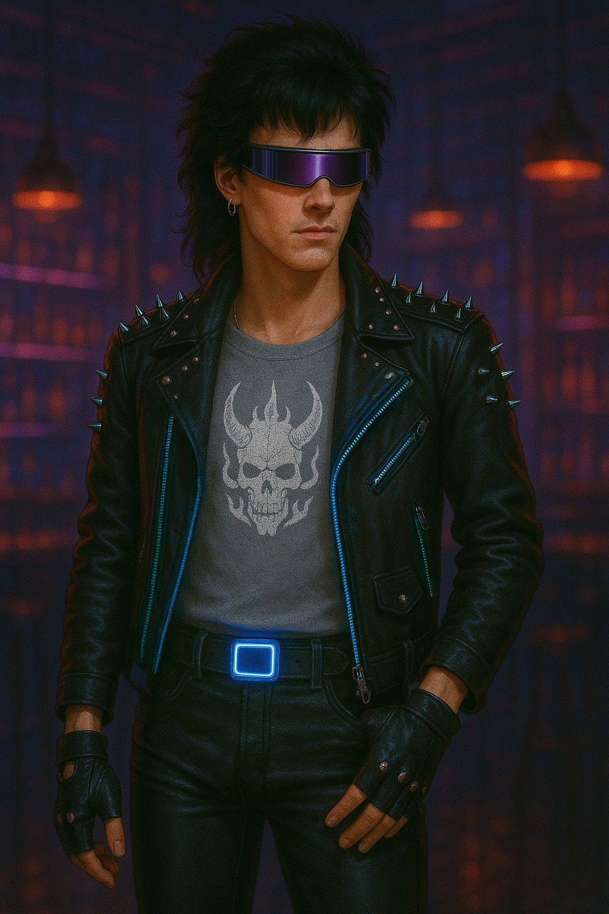
Характер
Бунтарский характер юности и взрывной - самого расцвета сил там и остались. Теперь этот человек скорее постарается неспешно пристроить свои кости как можно комфортнее, нарочито демонстрируя отсутствие необходимости куда-либо спешить. Это пока вы не попадете к нему в руки по работе - к человеку, которому явно от вас что-то сильно нужно, и лучше отдать ему это, пока ему не понадобилось что-то еще.История
Короткая версия:Родители - корпораты в Петрохеме. Клод - подросток-бунтарь, ненавидящий Петрохем как символ. Родители отправили его учиться в Найт-Сити на химика. Тот не взялся за ум - гулял как мог, хотя и немного учился. Но через пару лет ушел на войну ведомый мыслью, что Петрохем - плохие, а СовОил - жертва.
На войне в составе отряда русских "призывников" понял свою ошибку в желании найти хорошую сторону среди больших игроков. Выживал, применял знания химии на практике, был жесток. Оказался вынужден стать медиком при отряде. Получил кличку Volkolak за то, как менялся во взглядах и за боевой нрав.
На гражданке пытался взяться за старый разгульный образ жизни, чтобы скрыть от себя полученные психологические раны, но родители остались очень сильно недовольны и лишили довольствия. Положение спасло срастание с бандой, в рядах которой отныне и стал бойцом. Кличка Volkolak давалась всем не легко (кроме разве что Бориса), стал Volk'ом.
После прекращения активной деятельности банды не ушел на покой - жить-то на что-то надо. Продолжил промышлять тем, чего не чурался и в более бурные годы, благо талант есть - стал специализированным наемником, которого брали, когда нужно кого-то допросить, желательно не смертельно, вывести без лишнего шума и для некоторых прочих хитростей. Но наниматели новые (и дешевым) имена на улицах все чаще предпочитали опыту.
Не женился, и все же из случайных связей обзавелся дочерью Максим. Отношения с ней и её матерью неоднозначные. Поначалу были умеренными, когда он нечасто приходил увидеться с дочерью, сопровождая это деньгами, но позже отношение к нему все сильнее охладевало.
Отец умер, мать на корпоративной пенсии. Вступил с ней в чуть потеплевшую переписку, где она жалела об их прошлых взаимоотношениях и утверждала, что, возможно, её взгляды были перегибом.
Приходит увидеться со своими ребятами в Посмертие - считая в первую очередь именно их своей семьей.
Полная версия:
Показать содержимое
Все всегда ждут от дитя корпоратов, что он двинется по их стопам, но в реальности сказку про яблоко и яблоню выдумал Ньютон, ну или кто там еще. Клод же рос типичным подростком, не принимавшим идеалы родителей, и так никогда этим не "переболел". Финансово не бедствующие менеджеры Петрохема вынуждены были иметь дело с противопоставляющим себя их принципам юнцом, и при первой возможности отправили сына учиться в Найт-Сити по специальности, к которой у него вроде проявлялся талант. Это было их ошибкой - отпустить и без того нигилистически настроенного потомка с поводка. Если он и до этого считал Петрохем, проявление принципов которого видел в образе жизни родителей, лишь демонизированного угнетателя, чьи решения направлены на собственный рост не считаясь с окружающими, то теперь, лишившись возможности заглянуть в его подноготное нутро, он лишь взращивал ядовитые плоды из медийных слухов на почве сформированной до этого ненависти.
Продолжая учиться больше на автомате, Клод все сильнее погружался в независимую жизнь, полную рока, отношений без обязательств и прочих запрещенных веществ, благо в материальной помощи оставшиеся вдали родители ему не отказывали. Его отношение к окружающей действительности и растущая из этого молодежная публичная протестная деятельность строилось на простом фундаменте: правительство и корпорации используют простых людей, чтобы насаждать свою волю по всему миру. И мир обязан дать им отпор. Об этом пели рок-банды, об этом разговаривали в барах. Но это все было понято им лично слишком узконаправленно. Поворотным моментом для него стала разгоревшаяся Вторая Корпоративная Война. Влекомый собственными идеями, Клод разглядел в участии Петрохема пример агрессивной мировой политики крупной корпорации, и на накопленные средства покинул континент, чтобы влиться в ряды "угнетенной" стороны, которую, по наивности, разглядел в оппоненте Петрохема в этом разгоревшемся конфликте - в СовОиле, о котором, живя на другом материке, погруженный в собственные поверхностные представления о мироустройстве, не ведал практически ничего. Учеба в университете на этом, ясное дело, была закончена. А в последствии, когда информация об этом дошла до родителей - и их благорасположение.
***
Реальная война ни в чем не соответствовала идеалам юношеского максимализма. На стороне СовОил воевало множество наемников, но основной костяк составляли "призывники" из НовоСоветов. В отряде с последними Клод и прошел через этот военный конфликт, оставивший на нем и его восприятии реальности неизгладимый след. Вынужденный находить общий язык, он постепенно натаскался азам в русском, а вынужденный выживать - повернул свои знания химии на пользу себе и своим сослуживцам, став попутно и отрядным медиком, за неимением лучшего.
Но главное, что он усвоил - что в этой войне пострадавшие это не СовОил и НовоСоветы, а те, чьи жизни конфликт гигантов превратил в пыль. Среди больших игроков нет хороших и заботливых, а только бесконечно жадные сволочи. Правда и люди не были теми, за кого их принимали окружающие - в том числе такие наивные парни, как он. Война это вываливала на неподготовленный разум так, как ничто другое. Она не просто давала понять, что люди и без корпораций способны на самоуничтожение, она тыкала пальцем вам в грудь, туда, где вы, опустив взгляд, находили всё это безумие в самом себе. И вы либо отдаетесь ему и выживаете. Либо нет.
Придя по-юношески наивным добровольцем, готовым положить жизнь за большого дядю, и превратившись в озлобленного солдата, убивающего, а то и что похлеще, потому, что иначе убьют его и его товарищей, он "дослужился" от клички Volchonok до полноценного Volkolak'а, благо в достаточной мере познал язык, чтобы понять значение того и другого только к тому времени, когда первое прозвище осталось позади. Правда, в последствии что-то подсказывало ему, что в самом начале было еще одно, отчасти созвучное с "первым", но его полное звучание он не смог воспроизвести, а сослуживцы так и вовсе делали вид, что не понимали о чем он.
***
Таким он вернулся в Найт-Сити. Выжившим, сказал бы кто-то другой. Не умершим - говорил он себе сам. Не столько предавшим свои старые взгляды, сколько сочтевшим их бессмысленными, устаревшими. И совершенно не понимающим, куда пристроить себя дальше.
Но вечно позволять себе разгульную жизнь, в которую он снова погрузился, надеясь уйти от оставленных на сознании шрамов, найти дорогу к ушедшему чувству свободы, он себе теперь не мог, оставшись без поддержки от родителей, которые в свою очередь требовали от него в лучшем случае явиться с повинной. Вот только в тот момент любви к ним, как и к людям в целом, в нем не осталось - её предстояло найти заново. А уж к членам Петрохема, решением могучей воли которого война разбудила животное начало тысяч обычных людей, это было сложнее, чем даже случайным незнакомцам.
Выход ему показали новые знакомства, выпустившие его в своих рядах на улицы Найт-Сити. Озлобленный и ищущий отдушины, он мог бы сгореть в неоновых огнях, как множество до и после него. Но в нем разглядели жертву и смогли предложить ей пристанище. В нем разбудили жизнь и дали цель. Теперь он был одним из тех, кто отстаивал их общие интересы в открытой борьбе за влияние и выстраивания порядка таким, каким они его видят. Одним из. И только став им, он из пропасти смог выбраться на грань. Грань между членом новой семьи и ждущим своего зверем, оставшимся с войны. "Благо" Найт-Сити щедро кормил последнего, и ничьи старания не смогли бы его пересилить.
Однако, остаться Volkolak'ом у него не получилось - для большинства тех, кому он рассказывал о службе, сложный набор согласных давался не легко. Разве что помимо Бориса с его увлечениями советской культурой. А для остальных же остался только Volk - резкий набор согласных, и смысл, который знаком не каждому, но который так легко было в нем разглядеть в деле.
***
Когда на улицы Найт-Сити пришла Четвертая Корпоративная, мир вокруг изменился. Стрельбы и смертей стало больше, банды стали ожесточеннее, а их "семья" за всем этим не поспевала. Им бы хватило снаряжения и навыков, чтобы и дальше отстаивать своё кредо в городе, но одних только их было недостаточно - нужен был надлом, полный отказ от моральных принципов. То, через что Клод уже прошел на войне, что все еще оставалось в нем, и к чему в полной мере он возвращаться не хотел. За прошедшие годы Volkolak стал Volk'ом и принял себя таким.
Но отказ от борьбы это не тактика защиты. Ты можешь не принимать новые правила, но тебе придется играть по ним, либо бежать. И даже бежать не получится бесконечно. Клод не хотел принимать участия в новой войне, но полностью её избежать не удалось, и своё право на дальнейшее существование в Найт-Сити пришлось защищать с ожесточением. Даже не став снова солдатом, он все равно оказался участником, пусть теперь это и происходило на родной земле, а значит ему действительно было что защищать помимо ложных идеалов.
***
Все когда либо заканчивается, давая начало новому этапу круговорота жизни. Погрузившийся в Красное время мир был уже не тем. Выжившим приходилось познавать новые принципы существования. Искать способы продолжать жить. Раньше мерилом уважения на улицах были крутость и стиль. Теперь же - жестокость и беспринципность. Volk вернулся к тому, что знал и умел, к работе, где на его навыки был спрос. Фиксеры звали его, когда возникала нужда в таком получение сведений, чтобы допрашиваемый мог уйти на своих двоих. Но иногда и нет. Когда требовалось помочь вывести кого-то без лишнего шума. Ну а иногда и для странных хирургических вмешательств прямо на месте - нет, ничего общего с мусорщиками, просто небольшие надрезы и десяток швов тут и там, и не важно, что именно они были призваны скрывать.
Такая работа не могла быть постоянной, поэтому не сказать, чтобы даже к своим серьезным годам Клод жил обеспеченной жизнью - лишь меньшинство в Найт-Сити сумело найти свой путь и выстрелить так, чтобы обеспечить себя до конца жизни. Правда и этот самый конец у таких счастливчиков зачастую наступал раньше времени. Клод же остался сычом, даже когда жизнь давала ему другой шанс. Отец и мать оставались жить вдали, пока первый не покинул этот мир, а мать не вышла на корпоративную пенсию. Но и тогда они остались разделены выстроенным десятилетия назад барьером. Даже возникшая спонтанно переписка, в которой она жалела об их прошлых взаимоотношениях и утверждала, что, возможно, её взгляды были перегибом, не сильно утеплила их отношения. Неудача постигла его и на других фронтах. Случайные связи наградили его дочерью, но полноценной новой семьи из этого не получилось. Какое-то время, пока девочка еще не стала подростком, у Клода получалось балансировать отношения на расстоянии, практически покупая возможность видеться с дочерью за деньги, и даже сама девочка - Максим - проявляла к нему теплые чувства и расстраивалась от мимолетности их встреч. Но искусственность таких взаимоотношений не выдержала проверку временем и взрослением - сейчас он изредка переводит деньги (на рынке "услуг" возрастного соискателя старались подвинуть в пользу молодых и дешевых исполнителей), практически не получая взамен даже холодных сообщений, а контакты с её матерью и вовсе сошли на нет.
Из трех семей ближе всех ему осталась та, в чьей компании он проводит вечера в Посмертии, а иногда где-нибудь еще. В отличии от прочих, с ними ему есть что вспомнить и что разделить. И пусть для города он уже почти отживший своё - пусть и не буквально - старый пердун - что не правда - в нем, несмотря на годы, где-то все еще засел тот дерзкий глупый юноша, что ищет возможность ярко заявить о себе на весь мир. Личный ствол "Гром и Трепет":
Part 1. Трепет
Показать содержимое
Volk никогда не скрывал своих похождений на войне. Найт-Сити полон ветеранами и делиться историями - обычное для них времяпровождение. Вот только не все из участников Второй Корпоративной выступали за другую сторону. И еще меньше из них были готовы открыто этим делиться. Клод оказался одним из таких редких случаев и это не могло не привлечь внимание особо ярых патриотов. Для Volkа это вылилось в полу-открытое столкновение, где группка таких особо недовольных бустеров прихватили его на улице и подвергли продолжительным пыткам в назидание прочим "предателям". Без помощи подоспевших соратников Клод бы никогда не вышел из той комнаты, но и занятые обороной от вторгнувшихся по следам товарища его соратников патриоты не ожидали удара в спину. Напоследок, присев на корточки перед умирающим у залитой его же кровью стены заводилой оппонентов, держа на коленях принадлежавшую тому винтовку Милитеха, Volk спокойно смотрел в его мутнеющие глаза:
- Ты обвинял меня, что в моих руках было оружие не той стороны. Теперь, - он положил руку на покоившееся на коленях оружие. - Ты должен быть доволен. Part 2. Гром
Показать содержимое
Майкл 'Майк-Гром' Савич был тем еще засранцем, всегда умевшим найти едкое слово для товарища. Его проблемой было только то, что любое замечание в ответ он воспринимал зеркально - за попытку его подколоть, вместо того, чтобы лишний раз прислушаться. Клод может и не был оружейником, но его опыта было достаточно, чтобы указать Майку на недостаток обретенного тем новенького ствола, словно еще до того даже не видавшего ни чьих рук. Дефект затворного механизма обязан был сыграть с владельцем злую шутку, о чем предупредил Volk, и таки сыграл. Оказавшийся под огнем Майк-Гром не успел сориентироваться достаточно быстро, чтобы вернуться домой живым. Банда скорбела по потере, а Клод взял злополучный ствол, чтобы в память о его первом владельце сделать его частью своего вооружения. Отдав его в руки зарекомендовавших себя техников, не без чьего вклада до того Трепет заслужила своё имя, он получил обратно обрез для Трепета - уже без злополучного кривого затвора. С той поры Трепет и Гром стали неразлучной парой в одних руках, и своеобразным билетом Майк-Грома в Посмертие, не заставшего тот при жизни.
Навыки
HP: 40 • [-2 на все]=20 • [Спас от Смерти] 5Человечность: • Max=46 • Cur=44
Показать содержимое
40 до старта
+4 на старте Инициатива: 1d10+8
Очки улучшений: 50
Показать содержимое
+160 на старте
-140 за Тактическое оружие 6 -> 7
+90 после налета Арасаки
+140 после детективного расследования
-160 за Тактическое оружие 7 -> 8
-20 за Тактика 0 -> 1
+80 вылазка в Double p.1
+90 вылазка в Double p.2
-180 за Тактическое оружие 8 -> 9
-40 за Тактика 1 -> 2
+120 за Игру престолов
-60 за Тактика 2 -> 3
+100 за Ход Королевы
+70 за Угнать за 60 секунд
-200 за Тактическое оружие 9 -> 10 Медтех 6Медицина Показать содержимое
1 Хирургия - За 1 очко в Хирургии вы получаете 2 очка в навыке Хирургия.
1 МедТех (Крио) - За 1 очко в Криосистемах вы получаете 1 крионасос.
4 МедТех (Фарма):
- СпидХил: При введении дозы Спидхила цель, не находящаяся в состоянии смертельного ранения, немедленно восстанавливает количество ПЗ, равное ее ТЕЛ + ВОЛЯ. Человек может получить пользу только от одного применения Спидхила в день.
- Стимулятор: При введении дозы Стима цель может игнорировать все штрафы от состояния тяжелого ранения в течение часа. Человек может получить пользу только от одного применения Стима в день.
- Истина: Когда Медтех вводит дозу Истины, цель должна сделать проверку Сопротивления пыткам/наркотикам СЛ17 или погрузиться в туманное, внушаемое состояние на 10 минут. Находясь в этом состоянии, цель с трудом сосредотачивается и получает -5 к проверкам навыков Концентрации, Общения, Дедукции, Проницательности и Убеждения.
- Седатив: Если цель согласна, при введении Медтехом дозы Седатива цель теряет сознание на 4 часа. В течение этого времени Медтех, пытающийся лечить цель, получает бонус +2 к проверке Хирургии.
Если Медтех пытается ввести препарат сопротивляющейся цели, она должна пройти проверку Сопротивления пыткам/наркотикам СЛ15, иначе цель потеряет сознание и будет неспособна к Действиям либо на 1 минуту (20 Боевых Раундов), либо до тех пор, пока она не проснется из-за получения повреждения или если кто-то из посторонних предпримет действие, чтобы разбудить ее. Характеристики [Cur/Max] Показать содержимое
ИНТ (INT) 7Навыки Показать содержимое
РЕА (REF) 8/8
ЛВК (DEX) 5/5
ТЕХ (TECH) 7
ХАР (COOL) 8
ВОЛЯ (WILL) 7
УДЧ (LUCK) 4/4
СКО (MOVE) 6/6
ТЕЛ (BODY) 5/5
ЭМП (EMP) 5/4
Восприятия
Показать содержимое
Концентрация [2] +7 ВОЛЯ = 9
Скрытие/раскрытие объекта +7 ИНТ = 7
Чтение по губам +7 ИНТ = 7
Внимательность [4] +7 ИНТ = 11
Выслеживание +7 ИНТ = 7
Физические навыки
Показать содержимое
Атлетика [2] +5 ЛВК = 7
Акробатика +5 ЛВК = 5
Танец +5 ЛВК = 5
Выносливость +7 ВОЛЯ = 7
Сопротив. пыткам/наркотикам [6] +7 ВОЛЯ = 13
Скрытность [2] +5 ЛВК = 7
Навыки управления
Показать содержимое
Вождение [2] +8 РЕА = 10
Пилотирование (х2) +8 РЕА = 8
Судоходство +8 РЕА = 8
Верховая езда +8 РЕА = 8
Образовательные навыки
Показать содержимое
Бухгалтерия +7 ИНТ = 7
Обращение с животными +7 ИНТ = 7
Бюрократия +7 ИНТ = 7
Бизнес +7 ИНТ = 7
Композиция +7 ИНТ = 7
Криминология +7 ИНТ = 7
Криптография +7 ИНТ = 7
Дедукция [4] +7 ИНТ = 11
Образование [3] +7 ИНТ = 10
Азартные игры +7 ИНТ = 7
Язык (слэнг) [4] +7 ИНТ = 11
Язык (русский) [2] +7 ИНТ = 9
Поиск информации +7 ИНТ = 7
Знание местности (Дом) [2] +7 ИНТ = 9
Наука (Химия) [5] +7 ИНТ = 12
Тактика [2] +7 ИНТ = 9
Выживание в пустыне +7 ИНТ = 7
Навыки ближнего боя
Показать содержимое
Рукопашный бой [6] +5 ЛВК 11
Уклонение [6] +5 ЛВК 11
Боевые искусства (х2) +5 ЛВК 5
Оружие ближнего боя +5 ЛВК 5
Навыки оружия дальнего боя
Показать содержимое
Стрельба из лука +8 РЕА = 8
Автоматический огонь (х2) +8 РЕА = 8
Пистолеты +8 РЕА = 8
Оружие кр. калибра (х2) +8 РЕА = 8
Тактическое оружие [10] +8 РЕА = 18
Сценические навыки
Показать содержимое
Актерское мастерство +8 ХАР = 8
Игра на инструментах +7 ТЕХ = 7
Социальные Навыки
Показать содержимое
Подкуп +8 ХАР = 8
Общение [2] +4 ЭМП = 6
Проницательность [6] +4 ЭМП = 10
Допрос [6] +8 ХАР = 14
Убеждение [2] +8 ХАР = 10
Уход за собой +8 ХАР = 8
Знаток Улиц [4] +8 ХАР = 12
Торговля +8 ХАР = 8
Гардероб и стиль +8 ХАР = 8
Технические Навыки
Показать содержимое
Авиационные технологии +7 ТЕХ = 7
Знание техники +7 ТЕХ = 7
Кибертехника +7 ТЕХ = 7
Подрывник (х2) +7 ТЕХ = 7
Электроника/Безопасность (х2) +7 ТЕХ = 7
Первая помощь [2] +7 ТЕХ = 9
Фальсификация +7 ТЕХ = 7
Автомеханика +7 ТЕХ = 7
Художественное ремесло +7 ТЕХ = 7
Парамедик (х2) [6] +7 ТЕХ = 13
Кино- и фототехника +7 ТЕХ = 7
Взлом замков +7 ТЕХ = 7
Карманник +7 ТЕХ = 7
Морские технологии +7 ТЕХ = 7
Оружейник +7 ТЕХ = 7
Навыки Медтеха
Показать содержимое
Хирургия [2] +7 ТЕХ = 9
Мед. технологии [5] +7 ТЕХ = 12
Инвентарь
HP 40/40Боеприпасы для ШВ 23/25 (3) Бронебойные
+ (100) Стандарт
Боеприпасы для подствольного дробовика 2/2 (4) Бронебойные
+ (10) Стандарт
Боеприпасы для ТП (2) Стандарт
Удача 2/4
Человечность 40/46
Критические повреждения Body —
Критические повреждения Head —
Яд/наркотик —
Зависимости —
Оружие+1 на Прицельный выстрел
Гламурная Винтовка Милитех ВК (СКА 1) (м25) (+19) ___ 5d6 ___ 5000 €$
Показать содержимое
Темно-бордовый глянцевый корпус с реалистичным узором взрыва, начинающимся от приклада и разрастающимся к удлиненному стволу. На кромке приклада заметные потертости, словно им от души к чему-то не раз приложились.
Экзотическая штурмовая винтовка высокого качества. Может стрелять не стандартными боеприпасами. Имеет слоты модификаций.
При открытом ношении пользователь получает +2 к проверкам навыка Гардероб и стиль. Этот бонус действует только один раз и не сочетается с другим оружием, дающим бонус к гардеробу и стилю. + Подствольный Дробовик (СКА 1) (м2) (+19) ___ 5d6 ___ 500 €$
+ ИК/ПНВ прицел ___ 500 €$
ГанМарт Спешл НК (СКА 2) (м8) (+8) ___ 3d6 ___ 100 €$
Рукопашный бой (СКА 2) (+11) ___ 2d6
Бронебойная граната (СКА 1) (+7) ___ 6d6
ЗащитаКевлар Head ___ 7 ___ 50€$
Л.Бронекостюм Body ___ 10/11 ___ 0€$
КиберимплантыКиберглаз (правый) __ 7 ПЧ __ 100 €$
Тактический прицел __ 3 ПЧ __ 500 €$
ШмотКрионасос ___ 0 €$
Агент ___ 100 €$
Аэрогиппо ___ 50 €$
Колонки MiniMag ___ 50 €$
Сумка Медтеха ___ 100 €$
Синтококс
Седатив (фарма)
Истина (фарма) х2
Стимулятор (фарма) х2
СпидХил (фарма) х10/15
Ионные Наручники ___ 500 €$
Показать содержимое
Любое не экранированное от ЭМИ оборудование установленное в не экранированную Киберконечность скованную Ионными Наручниками становится недоступным до тех пор пока наручники не будут сняты. Ионные Наручники могут быть легко сломаны если у ломающего ТЕЛ 13 и выше. Дальномер от Оптитех ___ 500€$
Показать содержимое
Optitech MagViewer – это бинокль, позволяющий пользователю видеть детально на расстоянии до 800 м/ярдов. Успешная дополнительная проверка навыков, выполненная с использованием MagViewer для помощи при атаке одиночным или прицельным выстрелом по цели на расстоянии 51 м/ярд или дальше, добавляет +1 к проверке атаки. Этот бонус идёт в дополнение к обычному бонусу, предоставляемому за успешную вспомогательную проверку навыков. Это преимущество не суммируется со снайперским прицелом или опцией киберглаза ТелеОптика. СтильКожаный плащ ___ 100 €$
+ комплект мимиковой одежды (легкая броня) ___ 9/11 ___ 100 €$
Кожаные штаны ___ 100 €$
Старая футболка "Cutthroat" ___ 20 €$
Кожаные ботинки в пору ___ 100 €$
Кожаный ремень с большой бляхой ___ 100 €$
Деньги: 40 €$
Аня `Парочка` Колусевски
Внешность
Аня сейчас.Показать содержимое
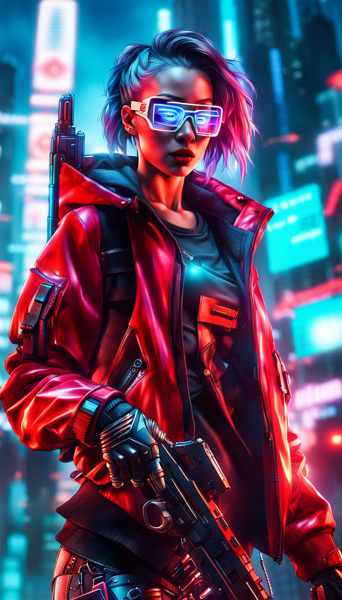 "Парочка" в молодости.
Показать содержимое
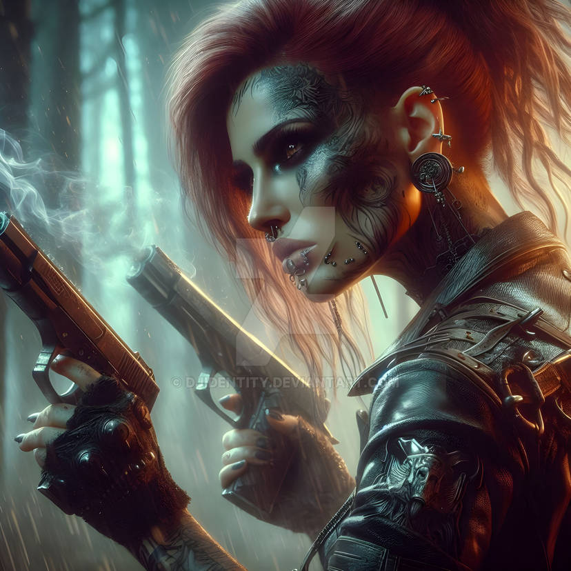
Характер
В юности Аня была резкая и дерзкая, но годы изменили ее характер. Так что сейчас она спокойная и основательная, больше закрытая и не слишком общительная.Происхождение - Восточная Европа, язык английский.
Личность -спокойная и основательная.
Стиль одежды - Leisurewear.
Прическа - цветные техноволосы.
Пристрастия - вкусная еда и азартные игры.
Что для вас ценнее всего - семья.
Ваше отношение к большинству людей - нейтрально.
Самый близкий человек в жизни - дочь.
Самое ценное, чем вы обладаете - измененное и тренированное тело.
Как вы жили - переселенцы.
Ваше окружение - юг, реднеки.
Биография - ваша семья рассеяна по ветру, из-за несчастья.
Ваши друзья - бывшая команда.
Ваши враги - фиксер Джеррард.
Что вы собираетесь делать - ничего особенного.
Ваш трагический роман - Дэн "Осьминог" и Дороти Ньюман.
Ваша цель всей жизни - нет.
Соло - телохранительница.
Моральный кодекс - иногда оступается, совершая неэтичные поступки, но редко.
Кто за вами охотится - фиксер Джеррард, периодические обострения старой вражды.
Где вы работаете - где угодно, где есть деньги.
История
Аня была уже третьим поколением переселенцев из Европы, так что родным языком считала уже американский, а никак не польский. Выросла она на юге, среди реднеков, что сказалось на ее характере и воспитании. Делать, а не думать и не витать в облаках. А еще в ее жилы сладким ядом впитались те американские мифы, где герой решает все проблемы с помощью верного «кольта». Стрелять Аня, кстати, выучилась очень рано. Так что когда ей наскучила жизнь в глубинке и она отправилась покорять большой город, то ее одежу составляли джинсы, кроссовки, майка и кожанка. А багаж - два пистолета и пачка патронов. К моменту Того-Самого-Концерта Аня успела получить прозвище Парочка, за свои пистолеты, умения фаст-дроу как-в-кино и привычку палить с двух рук. При этом она вела жизнь одинокой наемницы и бандитки, имела проблемы с алкоголем и ярко выраженную адреналиновую зависимость. И все потихоньку шло к тому, что Аня ярко и красиво сгорит во время очередного «дела». Концерт в морге и последующая бойня все изменили, так как в жизни парочки появились настоящие друзья. А потом, неожиданно даже для себя самой, она остепенилась и вышла замуж за Дэна «Осьминога» нетраннера из их банды. Парочка родила дочь Саманту, повесила пистолеты на стену и занялась ребенком.Вот только семейная идиллия продлилась не долго. Во время очередного погружения Дэн наткнулся на Черный Лед, который не смог победить, с понятным итогом. Похоронив мужа, Аня осталась с маленькой дочкой на руках и без источника постоянного дохода. Пришлось снимать со стены пистолеты и возвращаться к карьере соло. Хорошо еще, что друзья помогли с деньгами, что позволило Ане произвести апгрейт тела. Она выбрала карьеру телохранительницы, для того чтобы минимизировать риски. Понятно, что безопасных специализаций у соло нет. Зато есть разница охранять красивую куклу или совершать ограбление и налеты. Время показало, что в целом, Аня не прогадала, хотя с работой оказались связаны ее вторая несчастливая любовь и один источник проблем.
В один прекрасный момент Аня получила контракт на защиту сотрудницы регионального офиса Биотехники в Найт-сити Дороти Ньюман. Они были настолько разными, что, неожиданно подошли друг другу. И то, что началось как игра между телохранительницей и клиенткой, переросло во что-то большее. По крайней мере, для Ани. После смерти Дэна, она поклялась, что у нее не будет других мужчин. Вот только на чувства к Дороти клятва не действовала. Они были вместе несколько лет, а потом Дороти пришло предложение возглавить лабораторию в Лондоне. И та улетела, вычеркнув Аню из своей жизни. Потом был еще Джеррард, который вбил себе в голову, что ему необходимо переспать со своей красивой телохранительницей. И никак не хотел понимать слово «Нет». Аня считает, что у парочки попыток ее обнулить, концы тянуться именно к этому конфликту.
Дочка давно выросла, и, даже, подарила Ане пару внуков, а она все еще в бизнесе. Хотя и вложилась в мастерскую Хави. Биопластика, химкожа и техноволосы творят чудеса, так что в Ане сложно узнать ветерана шестидесяти лет от роду и заслуженную бабущку. В настоящий момент Аня плывет по течению жизни по инерции, без особых целей и амбиций, просто наслаждаясь процессом.
Навыки
• HP: 60• [-2 на все]=30 (порог тяжелого ранения)
• [Спас от Смерти] 12
• Человечность: 50 + 4 = 54 (• Max=50 • Cur=10)
• Инициатива: 1d10+11
СолоБоевое чутье (6)
Показать содержимое
Отражение урона
Умелое обращение
Личная инициатива (3)
Точная атака
Выявление слабостей
Обнаружение угроз (3)
Характеристики [Cur/Max] Показать содержимое
- 3 за импланты = 5/5
ИНТ (INT) 5/5
РЕА (REF) 8/8
ЛВК (DEX) 8/8
ТЕХ (TECH) 2/2
ХАР (COOL) 6/6
ВОЛЯ (WILL) 7/7
УДЧ (LUCK) 6/6
СКО (MOVE) 8/8
ТЕЛ (BODY) 4/4 + усиленные мышцы и кости = 6/6 + экзоскелет сигма = 12/12
ЭМП (EMP) 8/8
Навыки Показать содержимое
Восприятия
Показать содержимое
Концентрация [2] +7 ВОЛЯ = 9
Скрытие/раскрытие объекта 0+5 ИНТ = 5
Чтение по губам 0+5 ИНТ = 5
Внимательность [6] + 5 ИНТ = 11
Выслеживание 0+5 ИНТ = 5
Физические навыки
Показать содержимое
Атлетика [6] + 8 ЛВК = 14
Акробатика [6] + 8 ЛВК = 14
Танец 0 + 8 ЛВК = 8
Выносливость [2] + 7 ВОЛЯ =9
Сопротив. пыткам/наркотикам [4] + 7 ВОЛЯ = 11
Скрытность [6] + 8 ЛВК = 14
Навыки управления
Показать содержимое
Вождение 0 + 8 РЕА = 8
Пилотирование 0(х2) + 8 РЕА = 8
Судоходство 0 + 8 РЕА = 8
Верховая езда 0 + 8 РЕА = 8
Образовательные навыки
Показать содержимое
Бухгалтерия 0+ 5 ИНТ = 5
Обращение с животными 0+ 5 ИНТ = 5
Бюрократия 0+ 5 ИНТ = 5
Бизнес 0+ 5 ИНТ = 5
Композиция 0+ 5 ИНТ = 5
Криминология 0+ 5 ИНТ = 5
Криптография 0+ 5 ИНТ = 5
Дедукция 0+ 5 ИНТ = 5
Образование [2]+ 5 ИНТ = 7
Азартные игры 0+ 5 ИНТ = 5
Язык (слэнг) [4] + 5 ИНТ = 9
Язык (родной) [2] 0+ 5 ИНТ = 7
Поиск информации 0+ 5 ИНТ = 5
Знание местности (Дом) [2] 0+ 5 ИНТ = 7
Наука 0+ 5 ИНТ = 5
Тактика 2+ 5 ИНТ = 7
Выживание в пустыне 0+ 5 ИНТ = 5
Навыки ближнего боя
Показать содержимое
Рукопашный бой [6] +8 ЛВК =14
Уклонение [6] +8 ЛВК =14
Боевые искусства [3](х2) +8 ЛВК =11 (айкидо)
Оружие ближнего боя 0 +8 ЛВК =8
Навыки оружия дальнего боя
Показать содержимое
Стрельба из лука 0+ 8 РЕА =8
Автоматический огонь [6] (х2) + 8 РЕА =14
Пистолеты[6] + 8 РЕА =14
Оружие кр. калибра 0 (х2) + 8 РЕА =8
Тактическое оружие 0 + 8 РЕА =8
Сценические навыки
Показать содержимое
Актерское мастерство 0 + 6 ХАР = 6
Игра на инструментах 0+ 2 ТЕХ = 2
Социальные Навыки
Показать содержимое
Подкуп 0 + 6 ХАР = 6
Общение [4] + 5 ЭМП = 9
Проницательность [4] + 5 ЭМП = 9
Допрос 0 + 6 ХАР = 6
Убеждение [2] + 6 ХАР = 8
Уход за собой 0+ 6 ХАР = 6
Знаток Улиц 0+ 6 ХАР = 6
Торговля 0+ 6 ХАР = 6
Гардероб и стиль 0+ 6 ХАР = 6
Технические Навыки
Показать содержимое
Авиационные технологии 0 + 2 ТЕХ = 2
Знание техники 0 + 2 ТЕХ = 2
Кибертехника 0 + 2 ТЕХ = 2
Подрывник (х2) 0 + 2 ТЕХ = 2
Электроника/Безопасность (х2) 0 + 2 ТЕХ = 2
Первая помощь [2] 0 + 2 ТЕХ = 4
Фальсификация 0 + 2 ТЕХ = 2
Автомеханика 0 + 2 ТЕХ = 2
Художественное ремесло 0 + 2 ТЕХ = 2
Парамедик (х2) 0 + 2 ТЕХ = 2
Кино- и фототехника 0 + 2 ТЕХ = 2
Взлом замков 0 + 2 ТЕХ = 2
Карманник 0 + 2 ТЕХ = 2
Морские технологии 0 + 2 ТЕХ = 2
Оружейник 0 + 2 ТЕХ = 2
Трата ОУ
Рукопашный бой 6 —7 140
Рукопашный бой 7 —8 160
Остаток:
Инвентарь
HP 60/60Боеприпасы для ТП 20 зажигательных 20 обычных ПП 120/120
Удача 7/7
Человечность 54/54
Критические повреждения Body —
Критические повреждения Head —
Яд/наркотик —
Зависимости —
ОружиеДвузарядный Пистолет Лиса | ЧХ:113 | Милитех | 1,000€$
Это экзотический Тяжелый Пистолет с двумя магазинами на 10 патронов. Каждый магазин может быть заряжен боеприпасами разного типа. Несмотря на то, что это экзотическое оружие, оно может стрелять не стандартными боеприпасами.
При стрельбе стрелок выбирает, из какого магазина стрелять. Каждый магазин должен быть перезаряжен независимо, используя отдельное действие
3d6 СК 2 Маг 10 * 2
Тяжелый ПП Stenmeuer
3d6 СК 1 Маг 40 100€$
ЗащитаЛегкий бронешлем Head ОС 11 100€$
Легкий бронекостюм Body ОС 11 100€$
Киберимплантыусиленные мышцы и кости 1000 €$ ПЧ 14
имплантированный экзоскелет сигма 500 €$ (любимое оружие) ПЧ 14
нозальные фильтры 100 €$ ПЧ 2
(Итого: ПЧ = 30)
Внутренние Киберимпланты с Укрепленным Экранированием | ЧХ:20 | ПЧ 14 (4d6) | Госпиталь | 1,000€$
Внутренний Киберимплант. Все внутренние киберимпланты пользователя укреплены в соответствии с военными стандартами и не могут быть выведены из строя, отключены или уничтожены электрическим током, Микроволновкой или ЭМИ-импульсом, а также любым программным воздействием (кроме Черного ЛЬДА).
Имплант, как ему и положено, снижает максимальную Человечность на 2, но вся ПЧ от его установки давно уже вылечена
ШмотКомплект одежды Leisurewear 470 €$
Стильхимкожа 100 €$
техноволосы 100 €$
подкожные часы 100 €$
Снаряжение
агент 100
сумка 20
фонарик 20
пистолет - крюк 100
бинокль 50
боеприпасы 160
умные очки с НВ 1000
Текущие деньги: 3000
|
Чумбы Барт, Баррито (Бартоломео Чинкс) [Законник]  Показать содержимое 
Честный, порядочный и, как часто бывает в таких случаях, занудный человек, умеющий каким-то непостижимым образом лавировать между долгом и действительностью. Работает в 3-м участке. Скоро на пенсию выйдет. Женат. Взрослая дочь, замужем, детей пока нет. Хао Шу-рен [Медиа]  Показать содержимое  Боевая подруга прежних лет.
Боевая подруга прежних лет.Замужем, трое детей. Официально занимается вопросами моды. Неофициально... кто ж ее знает, Хао всегда была загадкой. Boris-Boris (Ян Тал) [Рокер/фиксер]  Показать содержимое  Старый приятель, заводила, душа компании, вечно притаскивал откуда-то заказы.
Старый приятель, заводила, душа компании, вечно притаскивал откуда-то заказы.Низкий голос, неторопливая речь, дозированные понты. Никакого отношения русским не имеет. Когда-то увлекся культурой Союза, пытался учить язык, сорил словечками, изучал (и тырил) музыку. В итоге взял русское имя псевдонимом, но не разобрался в отчествах. Сохраняет некоторый околорусский флёр по сей день. Недавно развелся. 4-й раз (дважды в том же составе). Так что мужчина в поиске. Эммет Саттон [Медтех/соло]  Показать содержимое  Старший из живых членов банды (71 год). Ветеран 4-й, медтех Макс-така в отставке, риппер. Держит клинику в Северном Хейвуде, на Мадера авеню. Сотрудничает с Dynalar (Известный производитель киберпрограммного обеспечения, ответственный за широкий спектр продуктов. По крайней мере половина установленных в городе киберимплантатов принадлежит Dynalar или их дешевая копия. Офис корпы в Норт-Хейвуде). Говорят, не гнушается работать на 6-ю улицу. Впрочем, говорят об этом очень-очень тихо.
Старший из живых членов банды (71 год). Ветеран 4-й, медтех Макс-така в отставке, риппер. Держит клинику в Северном Хейвуде, на Мадера авеню. Сотрудничает с Dynalar (Известный производитель киберпрограммного обеспечения, ответственный за широкий спектр продуктов. По крайней мере половина установленных в городе киберимплантатов принадлежит Dynalar или их дешевая копия. Офис корпы в Норт-Хейвуде). Говорят, не гнушается работать на 6-ю улицу. Впрочем, говорят об этом очень-очень тихо.Эммет, разумеется, дед и внуки у него уже взрослые люди. Дома почти не бывает, потому что с Сарой они сейчас слегка на ножах. Кевин Мейсон [Медтех]  Показать содержимое  Еще один риппер Never More, знакомый еще "с тех самых времен", нынче обосновавшийся в небольшом переулке между Посмертием и Медцентром.. Специализируется больше по корпоратам, даже, страшно сказать, репутацией обзавелся.
Еще один риппер Never More, знакомый еще "с тех самых времен", нынче обосновавшийся в небольшом переулке между Посмертием и Медцентром.. Специализируется больше по корпоратам, даже, страшно сказать, репутацией обзавелся.Исхак Кассел  Показать содержимое  Можно вывезти человека из Израиля, но нельзя Израиль вывезти из человека. Какое это имеет отношение к родившемуся в 4-м поколении уже в Штатах Исхаку – не понятно, но... просто немножко пообщайтесь с ним и вы все поймете. Как? Как этот человек оказался в рядах городских соло, а вовсе не в корпоратах или хотя бы медтехах – не понятно, но... просто немножко пообщайтесь с ним и вы таки все поймете.
Можно вывезти человека из Израиля, но нельзя Израиль вывезти из человека. Какое это имеет отношение к родившемуся в 4-м поколении уже в Штатах Исхаку – не понятно, но... просто немножко пообщайтесь с ним и вы все поймете. Как? Как этот человек оказался в рядах городских соло, а вовсе не в корпоратах или хотя бы медтехах – не понятно, но... просто немножко пообщайтесь с ним и вы таки все поймете.Прочие, причастные и не очень Квиила (напарник Барта)  Андрей (управляющий рестораном Red October)  Миа (случайная знакомая Эрвина)  Показать содержимое  Нетранер
НетранерОна одета в короткий вельветовый жилет, поверх ультрамариновой деловой рубашки с подвёрнутыми рукавами. Куча разноцветных браслетов на левой руке, на правой - умная перчатка. Невысокая, длинные ноги, широкие плечи. Выбритые виски с оголёнными дорогими разъёмами для деки и чтения щепок. И глаза... Чёрные как смоль, зеркальные как ртуть. Саманта (фиксер, Глен)  Показать содержимое  Среднего уровня. Среднего во всех отношениях – и доходы и репутация и масштабы операций. Вот на последнем и специализируется. Работает как Epam – сколачивает банду из доступных эджраннеров и предоставляет их на аутсорс. Шероховатости со всех концов смазывает деньгами и репутацией достижения результата. Богатейшая сеть знакомств. Очень хорошие скилы в сфере найма сотрудников. Тех, кто ей не подходит или с кем, как она чувствует, будут проблемы, отметает на подходе.
Среднего уровня. Среднего во всех отношениях – и доходы и репутация и масштабы операций. Вот на последнем и специализируется. Работает как Epam – сколачивает банду из доступных эджраннеров и предоставляет их на аутсорс. Шероховатости со всех концов смазывает деньгами и репутацией достижения результата. Богатейшая сеть знакомств. Очень хорошие скилы в сфере найма сотрудников. Тех, кто ей не подходит или с кем, как она чувствует, будут проблемы, отметает на подходе.Главные подозреваемые Кристиан СоверенДанные из базы лаборатории: Показать содержимое Кодовое имя: Дунай Имя: Кристиан Соверен Пол: м Дата рождения: 15.10.2000 г.р. Семейное положение: женат (дети 1) Должность: бухгалтер (компания Дубль) Дата приема: 1.06.2021 Участие: доброволец, контракт №1/0856942 от 5.02.2023, DNA +, отказ от последствий + Найдено в сети: Показать содержимое Кристиан Соверен довольно быстро отыскался в списке погибших во время взрыва. А также среди выпускников экономического факультета НСУ. Но на этом официальная информация и заканчивалась. Если бы Дубль продолжал деятельность, должны были последовать какие-то некрологи, как это делали другие корпы, и хотя бы хвосты каких-то правовых документов, но нет. К счастью, фамилия бухгалтера была не то, чтобы популярной в Найт-сити, а потому Коми отыскал того, кто мог быть отцом искомого Кристиана. Артур Шон Соверен, иммигрант из Англии, педиатр. Погиб в 2017-м в уличной перестрелке. Через него нашлась и мать – Жасмин Соверен, жертва углеродной чумы. Действительно, бухгалтер, видимо, не был завсегдатаем соцсетей, а потому следа о себе не оставил. По крайней мере такого, который пережил бы уничтожение старой СЕТи. Зато он, как первый муж, нашелся на странице некоей Лючии Соверен. Однако буквально месяца полтора назад страница была архивирована после смерти пользователя. Порывшись в новостях, Коми нашел ее среди жертв аварии – бензовоз и автобус, ничего нового. На самой странице было не то чтобы много информации. Фигурировал и последний муж – Захария Бенсон, ныне, надо полагать, вдовец. Зельда-МартаНайдено в сети: Показать содержимое Разумеется, ни Зельды, ни Марты в Роклин не нашлось. Потратив уйму времени и перелопатив горы текста, Коми уже отупело листал официальные новости и вдруг заметил знакомые патлы. Открытие сервисного центра Роклин в Глене. Госпожа Джасинда Хидальго с ножничками перерезает ленточку. Лощеные корпораты кончают, аплодируя. И вот среди них эта бледная поганка. Отставив кофе, Коми поднял еще с десяток новостей и снова нашел ее на одном из официальных снимков. Опять торжественное мероприятие, опять в кадре топчеги Роклин и опять эта "Зельда" трется почти в первых рядах. Окей, борды Роклин… иииии, нет. Прищурившись, Коми посверял холеные рожи и идентифицировал на фотографиях нескольких руководителей высшего звена. Однако Зельды среди них не было. Да кто она такая, ну не телохранитель же. Выдержки из обсуждения об общей предыстории группыЭрвин "Коми" ДавыдовЯ бы обрисовал так: "В 2019 группа "Dancing in the grave" в лице неформального лидера Эрвина Давыдова и ещё пары студентов, организовали концерт во дворе моргаПоправка от мастераИтак, получается, что в 2019 в Верхней Марине, во время стычки с бандой, вы укрылись в морге и обнаружили там фабрику по извлечению имплантов и доки о работах над киберпсихозом, в том числе его провоцировании у живых и не согласных на то людей. Много крови утекло, много пуль было выпущено, вышли вы оттуда уже братьями по оружию. Место стало культовым, сюда стали приходить, чтобы нанять бойцов. Потом кто-то сумел выкупить развалины, организовал бар, но люди продолжали приходить туда как на биржу наемников. Так оно и стало Посмертием. И не забудьте, что последующие 25 лет вы поддерживаете друг с другом теплые отношения. Я не хочу получить группу, в которой каждый смотрит в свою сторону и задается вопросом "что я делаю с этими придурками". Такое тут, к сожалению, регулярно случается. Года рождения и возраст участников Показать содержимое Эрвин 1997г.р. 48 лет (на момент битвы за будущее Посмертие 22 года, на момент взрыва в НС - 26 лет) Андреас 1990г.р. 55 лет (29 - 33) Клод 1988г.р. 57 лет (31 - 35) Барри (НПС) 1986г.р. 59 лет (33 - 37) Boris (НПС) 1977г.р. 68 лет (42 - 46) Эммет (НПС) 1974г.р. 71 (45 - 49) Лог2.02 в Лабу проникла группа эджраннеров.7, 9 и 11 февраля из Лабы вышли клоны: Коми, Гонзо, Клод + Дэн 13.02 клоны Клода и Дэна влезли в Арасаку 14.02 Арасака наехала на Never More 15.02 Коми посмотрел на труп клона. А Never More съездила в Замыкание 16.02 Never More закупилась на деньги Арасаки и поехала в ЗП. Там нашли труп клона Гонзо и посмотрели видео от Зельды 17.02 Never More встретилась с Зельдой. Потом отправилась в ЗП, нашла лабораторию и вскрыла ее. 18.02 Расследование и продажа лута. 19.02 9:00 Срок подписания договора с Зельдой По фактамЭджраннеров наняла некая Марта через фиксера Саманту. Их было 7 человек, 5 погибли. У двоих из семёрки есть убежище в Пацифике. Марта по описанию похожа на Зельду, но доказательств нет. Лаборатория принадлежала компании Дубль. По информации от ИИ на момент взрыва проект по первому экспериментальному необратимому переносу личности из одного тела в другое через состояние ИИ был на средней стадии. По информации от ИИ, он может копировать себя в клоны. Разморозка 6 часов, общее время существования копии - 72 часа. После этого копия отключается и клон умирает. Для того чтобы завершить перенос, нужен админ-доступ, который был у руководства Дубль. Есть предположение, что руководство Дубля и все, причастные к проекту, не пережили взрыв. После взрыва разорившуюся компанию Дубль купила Роклин. И, судя по текущему положению дел, о лаборатории она не узнала. По информации от Зельды, ее корпа недавно обнаружила, что некоторые ее активы уцелели во время взрыва. Она хочет нанять Never More чтобы те сходили и вернули все законному владельцу. |
|
|
Эрвин `Коми` Давыдов
Хэлсэ
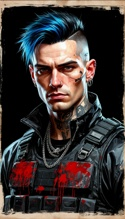 07.07.2025 12:30 |
Эрвин "Коми" Давыдов
7.02. Коми Вышел из лаборатории, получил по голове, возможно от тех же мусорщиков, не сориентировался в пространстве. 9.02. Гонзо Улики: искал оборудование для выхода в сеть, найден у лаза с точкой выхода в сеть. Причины: хотел выйти в старую сеть. Вопросы: Искал ключ? Информацию о судьбе Дубля? Хотел повысить административные права Цифровой Копии? Склоняюсь к третьему. Организация: Вышел в город, нашёл оборудование, заблудился, кончилось время. Дополнение: возможно, не заблудился и в том здание было что-то, что ищет Крис. 13.02. Крис лезет в Арасаку. Улики: Телефон, СМС второму клону: Это не Арасака. Видеозапись с клоном Дэна. Причина: ? , ищет, кому достались активы Дубля? Ищет ключ? Условия: 3 дня, прийти в себя, выйти из зоны, сориентироваться, что случилось, найти офис Арасаки, найти оборудование, контакты, план помещения, получить искомое и вернуться в лабораторию. Организация: необходимо найти офис, организовать штурм или проникновение, знать где и как получить искомое, получить подтверждение, что это "Не Арасака", вырваться из офиса и доковылять аж до глубины Зоны. Дополнение: Клон ранен, но способен двигаться, раны не смертельны, скрылся от преследования Арасаки. Вывод: Крис не плохо организует подобные операции, успех не достигнут. Вопрос: Что искал Крис и как он смог это организовать. 14.02. наезд Арасаки. Причина: клон Клода врывается за день до этого в офис Арасаки, ищут подозреваемого. Вывод: они не знают о клоне и ищут оригинал. Дополнение: они сообщают, что это не тот Клод, следовательно, либо догадываются о клоне, либо предполагают, что кто-то замаскировался под Клода. Результат: шантаж удаётся, Арасака не хочет выносить инцидент на общественность. Вопрос: Почему? Понимают, что дело связано с их разработками по клонированию? Боятся репутационных потерь? В Найт Сити? Слишком много можно найти причин, раздолбать группу эджраннеров с таким багажом, как у Never More. 16-17. 02. Зельда. Общие сведения: группа наёмников у входа в лабораторию ждёт людей "довоенного времени" с подготовленной записью. Ждали около суток, встреча на записи назначена на 7 утра следующего дня. Либо ждали после 7 утра и приукрасили про сутки, либо докладывали Зельде о том, что запись передали. Зельда - светловолосая европиоидная женщина. Улики: работа с посредниками, компания на стыке "Кибернетики и медицины", светлые волосы, готовность работать официально. Причина: нужны люди, которые молча проникнут в лабораторию и добыть "Собственность". Вопросы: на кого работает Зельда? Работала ли с первой группой эджраннеров? Разница показаний: Имя: Зельда - Марта (Воительница; принцесса - мать супермена; бэтмэна?), узнала недавно - вышла на связь 31 января. Сходства: 31 явнаря и недавно, просто не уточнила дату. Блондинка. Корпоратка. Дополнение: Либо не ведёт слежку, либо считает, что всё идёт так как надо. Дала много времени на обдумывание. |
|
Эрвин `Коми` Давыдов
Хэлсэ
07.07.2025 12:30 |
Ричард "Ковбой" О’Коннелл (соло - рокербой)
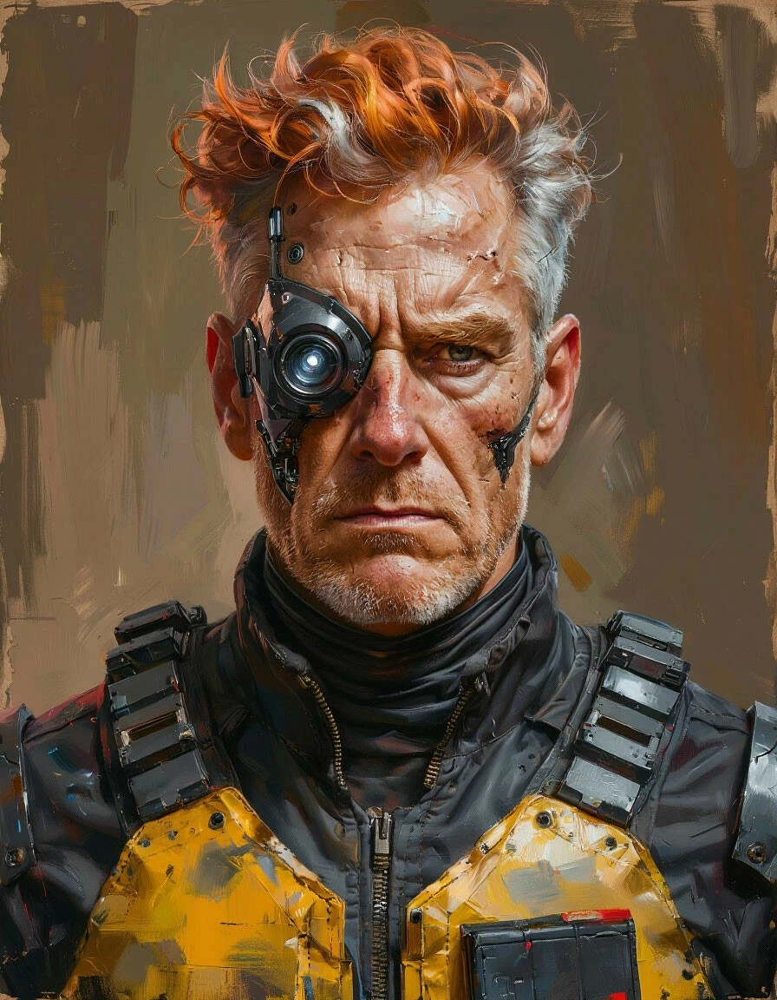 "Этот парень однажды сказал, что я показушник, и на улице подобный мне давно бы гнил в канаве. Ха, на следующий день из-за перелома руки, всей съёмочной группе пришлось искать другого актёра". Ковбой Рич не какой-то там актёришка, да что там, его на первую роль-то взяли, после того как режиссёр увидел, как он раскидал группу вымогателей из Когтей, что заявились на съёмочную площадку. 67 лет. В разводе, 6-ро детей. Последняя жена просто устала терпеть постоянных любовниц с их отпрысками. |